资源
- GAMES104-现代游戏引擎：从入门到实践_哔哩哔哩_bilibili
- GAMES104 - 现代游戏引擎入门必修课 (boomingtech.com)
- Piccolo 社区 - 游戏引擎爱好者的新家园 (piccoloengine.com)
- BoomingTech/Piccolo: Piccolo (formerly Pilot) – mini game engine for games104 (github.com)
- GAMES104：现代游戏引擎，从理论到实践 - 知乎 (zhihu.com)
课程
第十五节：游戏引擎的 Gameplay 玩法系统基础
Gameplay Complexity and Building Blocks
游戏复杂性和构建模块
Outline of Gameplay System
游戏系统概述
Gameplay complexity and Building Blocks
游戏复杂性和构建模块
-
Overview
概述
-
Event Mechanism
事件机制
-
Script System
脚本系统
-
Visual Script
可视化脚本
-
Character, Control and Camera
角色、控制和相机
AI
Challenges in GamePlay (1/3)
游戏玩法的挑战
Cooperation among multiple systems
多系统协作
{kind=link}
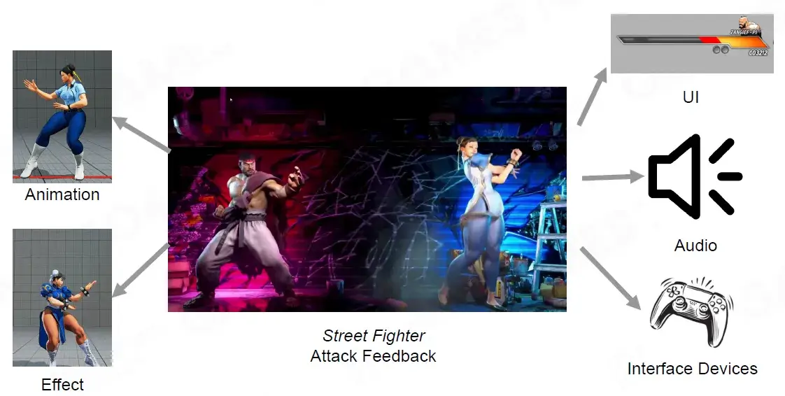
Challenges in GamePlay (2/3)
Diversity of game play in the same game
单种游戏多种玩法
{kind=link}
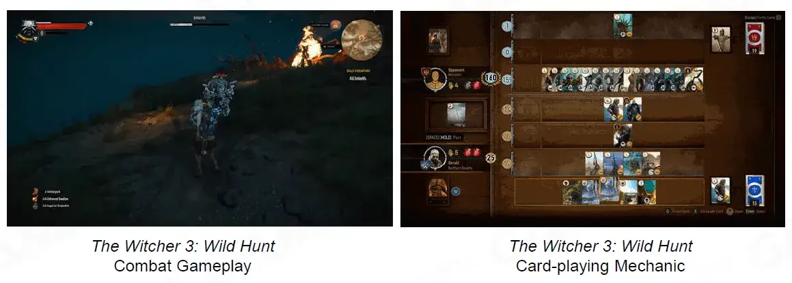
Challenges in GamePlay (3/3)
Rapid iteration
快速迭代
{kind=link}
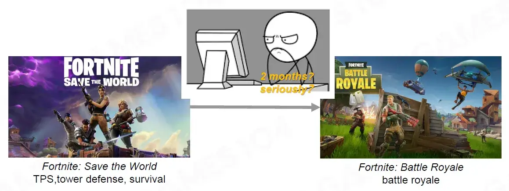
Epic acknowledged that within the Fortnite fundamentals, they could also do a battle royale mode, and rapidly developed their own version atop Fortnite in about two months.
Epic 承认，在 Fortnite 的基本原理内，他们也可以做一款大逃杀模式，并在大约两个月内迅速在 Fortnite 的基础上开发了自己的版本。
Event Mechanism
事件机制
Let Objects Talk
让不同对象之间联系
{kind=link}
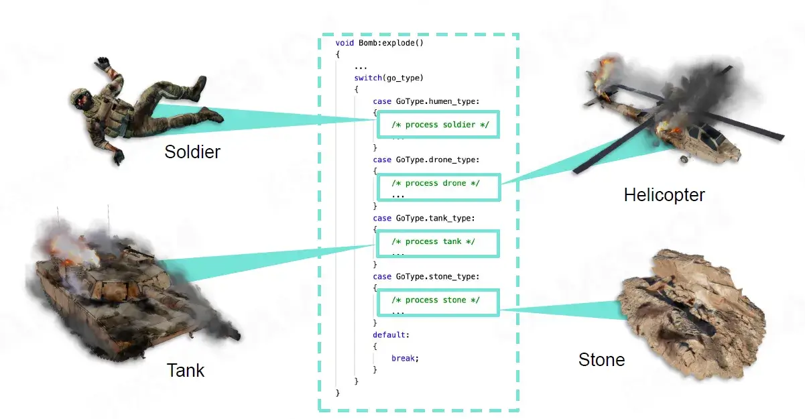
Event/Message Mechanism
事件/消息机制
-
Abstract the world communication to messages
将世界通信抽象为消息
-
Decoupling event sending and handling
解耦事件发送和处理
{kind=link}
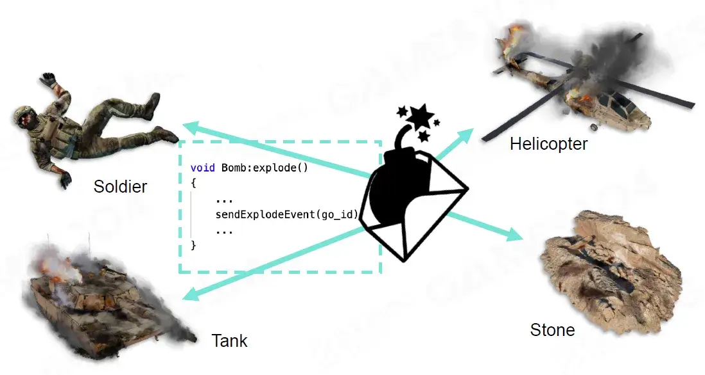
使用消息机制便于不同对象之间联系
Publish-subscribe Pattern
发布-订阅模式
-
Publisher categorizes published messages (events) into classes
发布者将发布的消息（事件）分类为不同的类别
-
Subscriber receive messages (events) that are of interest without knowledge of which publishers
订阅者接收感兴趣的消息（事件），但不知道是哪个发布者
{kind=link}
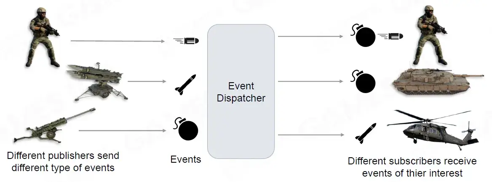
3 Key Components of Publish-subscribe Pattern
发布-订阅模式的 3 个关键组件
-
Event Definition
事件定义
-
Callback Registration
回调注册
-
Event Despatching
事件分派
Event Definition
事件定义
{kind=link}
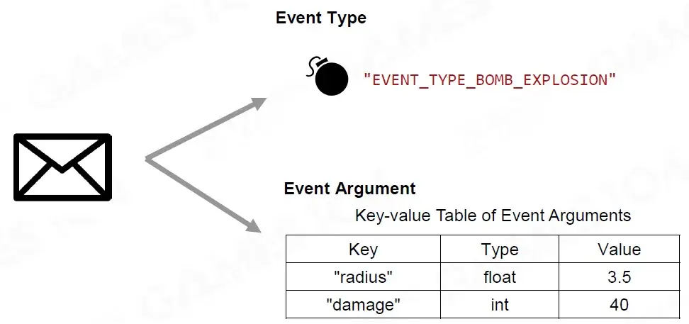
定义事件的类型（枚举）和变量
Type and Arguments
类型和参数
{kind=link}
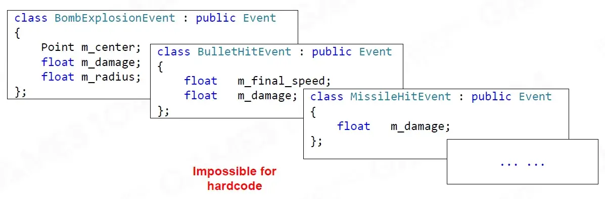
Impossible for hardcode
硬编码不可能
-
Editable
可编辑性
{kind=link}
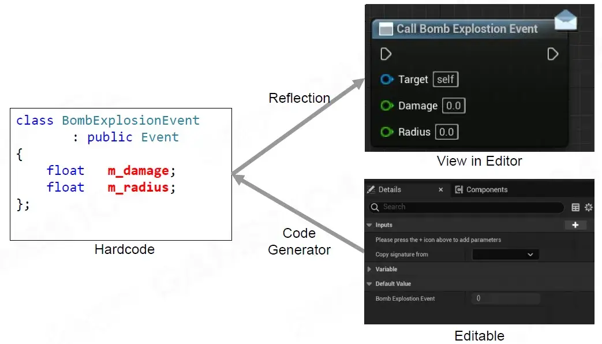
Callback Registration
回调注册
Callback (function)
回调（函数）
-
Any reference to executable code that is passed as an argument to another piece of code
对作为参数传递给另一段代码的可执行代码的任何引用
字面上的理解，回调函数就是一个参数，将这个函数作为参数传到另一个函数里面，当那个函数执行完之后，再执行传进去的这个函数。这个过程就叫做回调。
{kind=link}
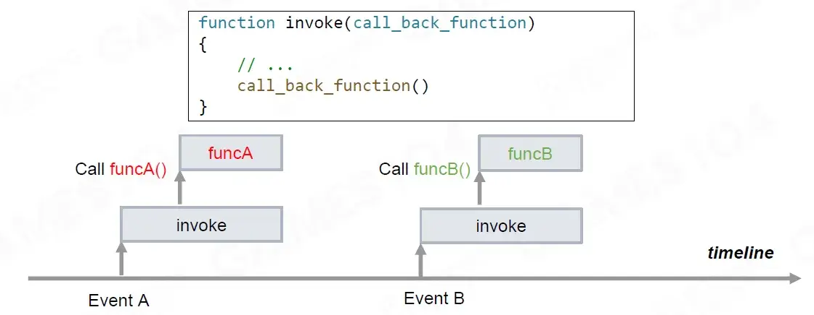
Object Lifespan and Callback Safety
对象生命周期和回调安全
Time points of registration and execution differs
注册和执行的时间点不同
{kind=link}
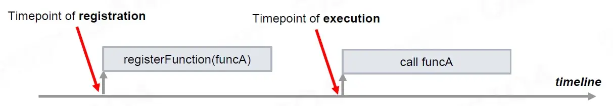
{kind=link}
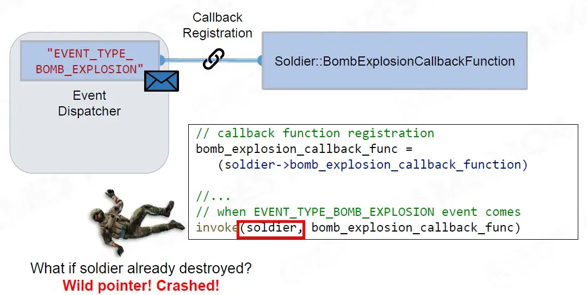
执行回调函数时，回调函数所在的对象已经被销毁了，报错。
Object Strong Reference
对象强引用
{kind=link}
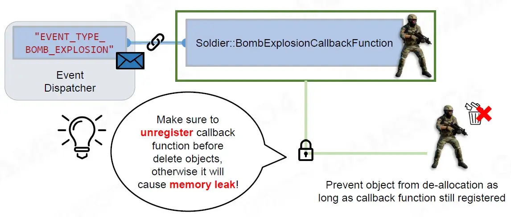
Make sure to unregister callback function before delete objects, otherwise it will cause memory leak!
删除对象前请务必注销回调函数，否则会造成内存泄漏！
Prevent object from de-allocation as long as callback function still registered
只要回调函数仍然注册，就防止对象被取消分配
Object Weak Reference
对象弱引用
{kind=link}
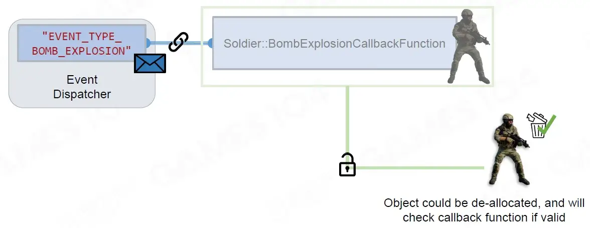
Object could be de-allocated, and wilcheck callback function if valid
对象可以被取消分配，并且将检查回调函数是否有效
Event Dispatch
事件分派
-
Send event to appropriate destination
将事件发送到适当的目的地
{kind=link}
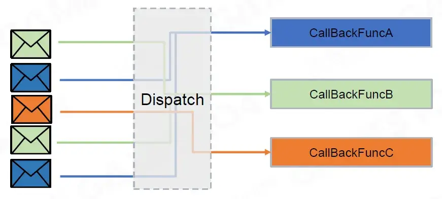
Event Dispatch: Immediate
事件分派：立即
{kind=link}
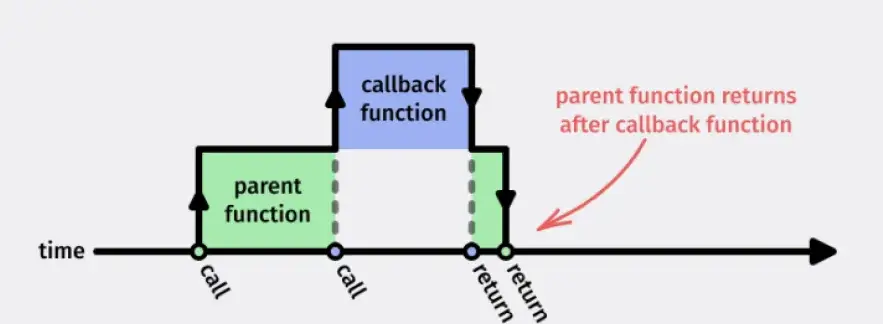
parent function returns after callback function
回调函数之后父函数返回，这么做可能出现如下问题：
-
Deep well of callbacks
回调的深井
{kind=link}
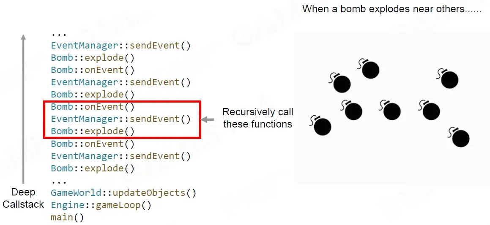
这么做可能导致 Callstack 过长，占用内存。
-
Blocked by function
被函数阻止
期间某个函数耗时较长，导致帧率突然下降。
{kind=link}
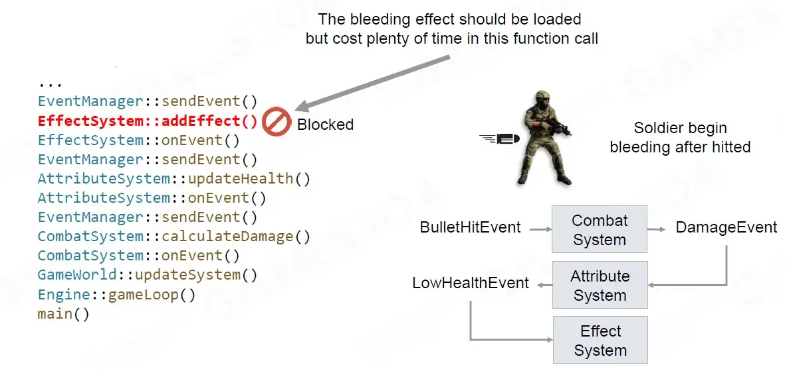
The bleeding effect should be loaded but cost plenty of time in this function call
应该加载出血效果，但在此函数调用中会花费大量时间
- Difficult for parallelization
难以并行化
{kind=link}
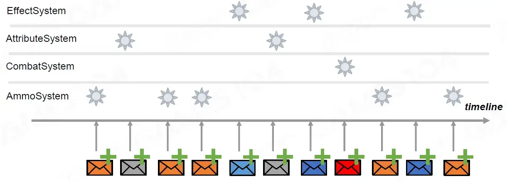
Event Queue
事件队列
Basic implementation
基本实现
-
Store events in queue for handling at an arbitrary future time
将事件存储在队列中，以便在未来的任意时间进行处理
{kind=link}
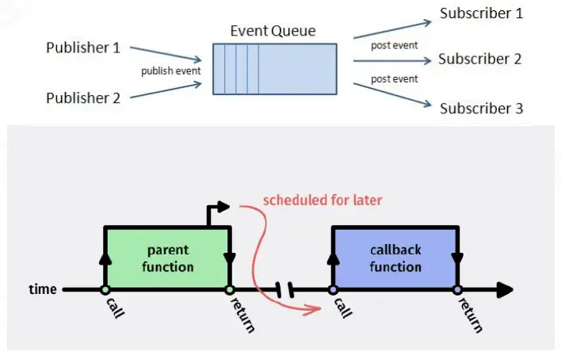
Event Serializing and Deserializing
事件序列化和反序列化
-
To store various types of events
存储各种类型的事件
{kind=link}
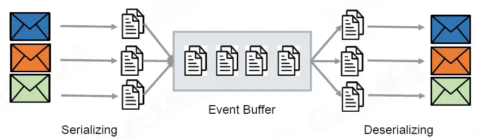
Event Quene
事件队列
Ring buffer
环形缓冲区
{kind=link}
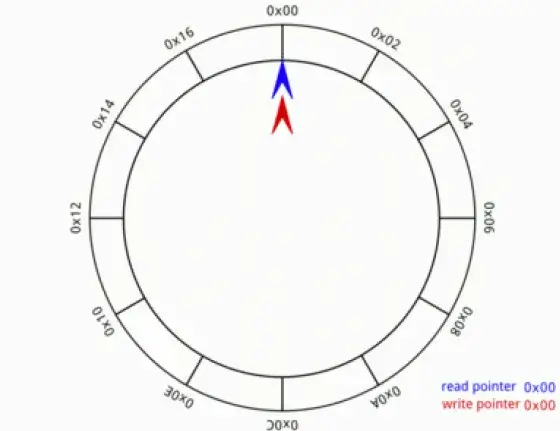
Batching
批处理
{kind=link}
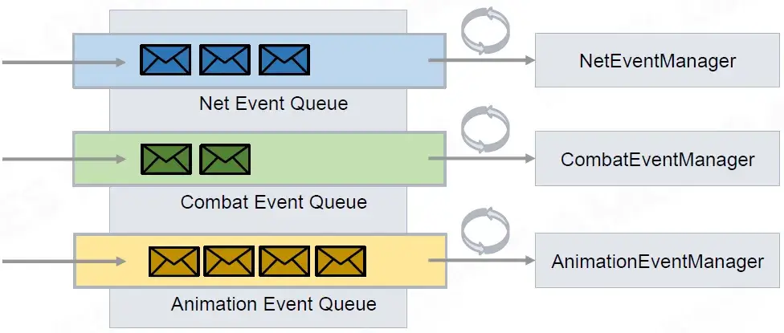
Problems of Event Queue (1/2)
事件队列的问题
-
Timeline not determined by publisher
事件发布者尚未确定时间表
{kind=link}
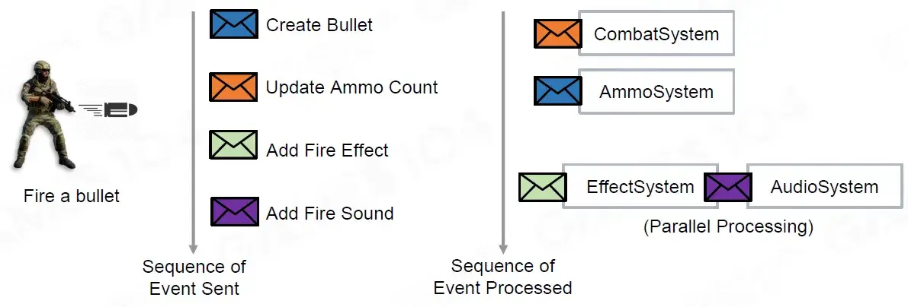
Problems of Event Queue (2/2)
-
One-frame delays
一帧延迟
{kind=link}
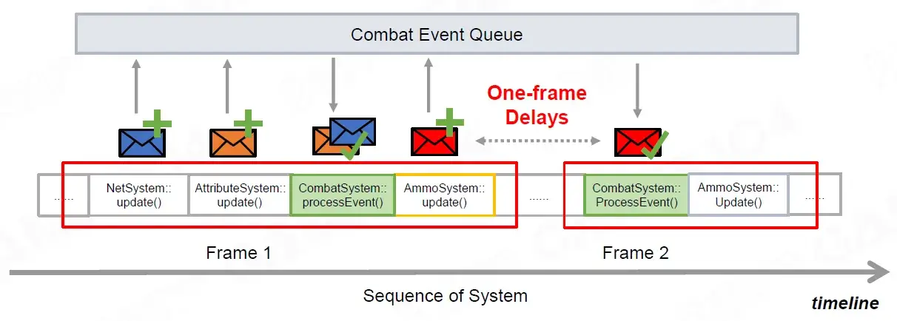
Game Logic
游戏逻辑
Early Stage Game Logic Programming
早期游戏逻辑编程
Compiled language (mostly C/C++)
编译语言（主要是 C/C++）
-
Compiled to machine code with high performance
编译为高性能机器代码
-
More easier to use than assembly language
比汇编语言更易于使用
{kind=link}
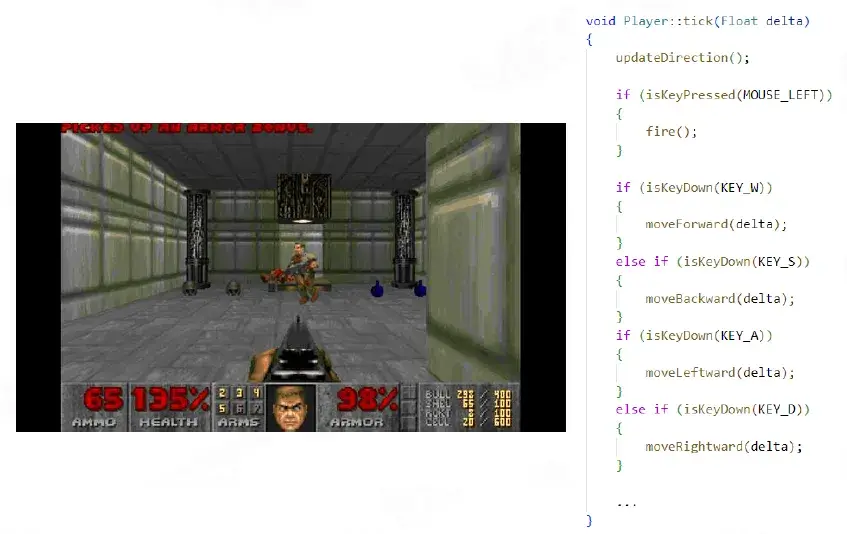
修改某个游戏逻辑需要重新编译整个游戏。
Problem of Compiled Languages
编译语言的问题
Game requirements get complex as hardware evolves
随着硬件的发展，游戏要求变得复杂
-
Need quick iterations of gameplay logic
需要快速迭代游戏逻辑
Issues with compiled language
编译语言的问题
-
Need recompilation with even a little modification
即使进行少量修改也需要重新编译
-
Program can easily get crashed with incorrect codes
程序很容易因代码错误而崩溃
Glue Designers and Programmers
将设计师和程序员连接起来
-
Get rid of inefficient communication between designers and programmers
摆脱设计师和程序员之间低效的沟通
-
Designers need direct control of gameplay logic
设计师需要直接控制游戏逻辑
-
Artists need to quickly adjust assets at the runtime environment
艺术家需要在运行时环境中快速调整资产
{kind=link}
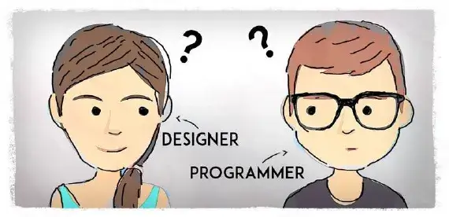
Scripting Languages
脚本语言
-
Support for rapid iteration
支持快速迭代
-
Easy to learn and write
易学易写
-
Support for hot update
支持热更新
-
Stable, less crash by running in a sandbox
沙盒运行稳定，崩溃少
function tick(delta)
if input_system.isKeyDown(Keycode.W) then
self:moveForward(delta)
elseif input_system.isKeyDown(Keycode.S) then
self:moveBackward(delta)
end
if input_system.iskeyDown(Keycode.MouseLeft) then
self:fire(delta)
end
...
endHow Script Languages Work
脚本语言的工作原理
Script is converted to bytecode by a compiler first, then run on a virtual machine
脚本首先由编译器转换为字节码，然后在虚拟机上运行
{kind=link}
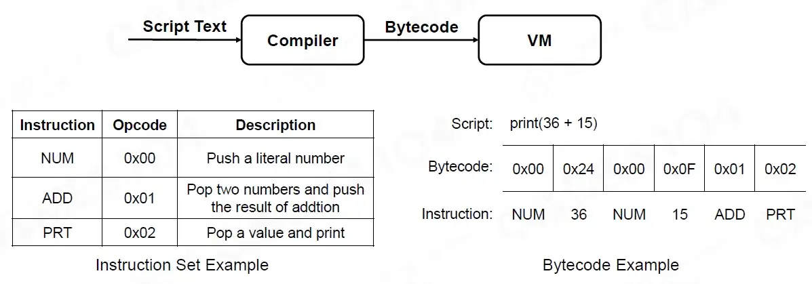
Object Management between Scripts and Engine (1/2)
脚本和引擎之间的对象管理 (1/2)
Object lifetime management in native engine code
原生引擎代码中的对象生命周期管理
-
Need to provide an object lifetime management mechanism
需要提供对象生命周期管理机制
-
Not safe when script uses native objects (may have been destructed)
当脚本使用原生对象时不安全（可能已被破坏）
{kind=link}
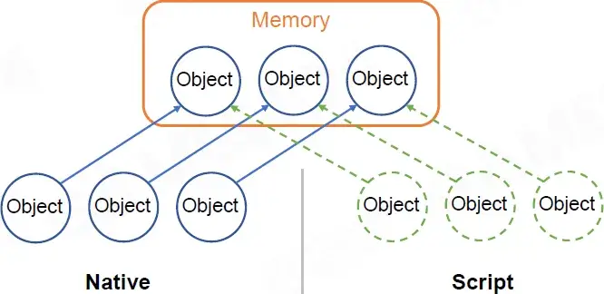
Object Management between Scripts and Engine (2/2)
脚本和引擎之间的对象管理 (2/2)
Object lifetime management in script
脚本中的对象生命周期管理
-
The lifetime of objects are auto managed by script GC
对象的生命周期由脚本 GC 自动管理
-
The time when object is deallocated is uncontrolled (controlled by GC)
对象被释放的时间不受控制（由 GC 控制）
-
Easy to get memory leak if reference relations get complex in script
如果脚本中的引用关系变得复杂，则容易发生内存泄漏
{kind=link}
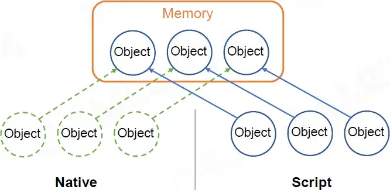
Architectures for Scripting System (1/2)
脚本系统架构 (1/2)
Native language dominants the game world
原生语言主导游戏世界
-
Most gameplay logic is in native code
大多数游戏逻辑都采用原生代码
-
Script extends the functionality of native engine code
脚本扩展了原生引擎代码的功能
-
High performance with compiled language
编译语言带来高性能
{kind=link}
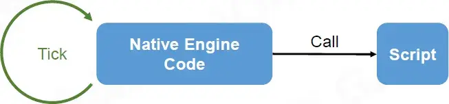
Architectures for Scripting System (2/2)
Script language dominants the game world
脚本语言主导游戏世界
-
Most gameplay logic is in script
大多数游戏逻辑都在脚本中
-
Native engine code provides necessary functionality to script
原生引擎代码为脚本提供必要的功能
-
Quick development iteration with script language
使用脚本语言快速进行开发迭代
{kind=link}
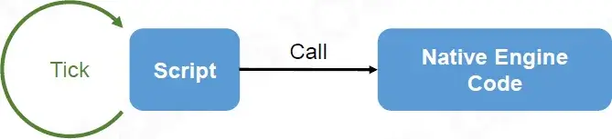
Advanced Script Features - Hot Update
高级脚本功能 - 热更新
Allow modifications of script while game is running
允许在游戏运行时修改脚本
-
Quick iteration for some specific logic
针对某些特定逻辑进行快速迭代
-
Enable to fix bugs in script while game is online
允许在游戏在线时修复脚本中的错误
A troublesome problem with hot update
热更新的一个麻烦问题
-
All variables reference to old functions shouldbe updated too
所有引用旧函数的变量也应更新
{kind=link}
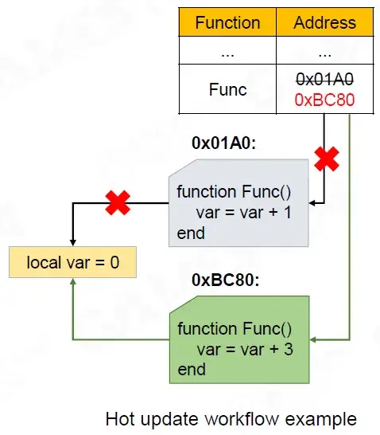
Issues with Script Language
脚本语言的问题
The performance is usually lower than compiled language
性能通常低于编译型语言
-
Weakly typed language is usually harder to optimize when compile
弱类型语言在编译时通常更难优化
-
Need a virtual machine to run the bytecode
需要虚拟机来运行字节码
-
JIT is a solution for optimization
JIT 是优化的解决方案
Weakly typed language is usually harder to refactor
弱类型语言通常更难重构
{kind=link}
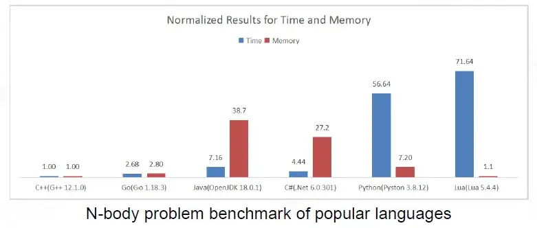
Make a Right Choice of Scripting Language
正确选择脚本语言
Things need to be considered
需要考虑的事项
-
Language performance
语言性能
-
Built-in features, e.g. object-oriented programming support
内置功能，例如面向对象编程支持
Select the proper architecture of scripting
选择合适的脚本架构
-
Object lifetime management in native engine code or script
本机引擎代码或脚本中的对象生命周期管理
-
Which one is dominant, native language or script
本机语言或脚本哪个占主导地位
Popular Script Languages (1/2)
热门脚本语言 (1/2)
Lua (used in World of Warcraft, Civilization V)
Lua（用于《魔兽世界》、《文明 5》）
-
Robust and mature
强大且成熟
-
Excellent runtime performance
出色的运行时性能
-
Light-weighted and highly extensible
轻量且高度可扩展
Python (used in The Sims 4, EVE Online)
Python（用于《模拟人生 4》、《星战前夜》）
-
Reflection support
反射支持
-
Built-in object-oriented support
内置面向对象支持
-
Extensive standard libraries and third-party modules
广泛的标准库和第三方模块
C# (to bytecode offline, used in Unity)
C#（离线字节码，用于 Unity）
-
Low learning curve, easy to read and understand
学习难度低，易于阅读和理解
-
Built-in object-oriented support
内置面向对象支持
-
Great community with lots of active developers
拥有大量活跃开发人员的优秀社区
{kind=link}
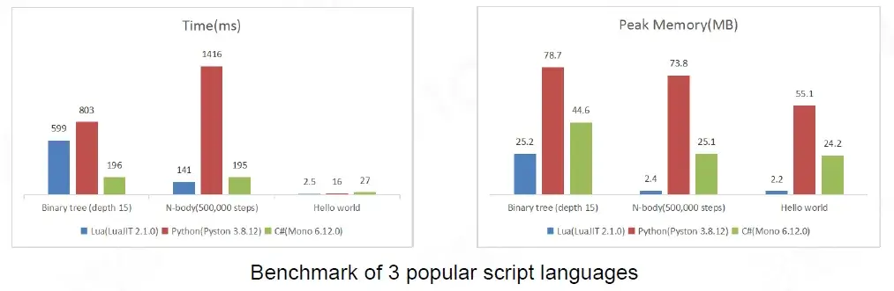
Visual Scripting
可视化脚本
Why We Need Visual Scripting
为什么我们需要可视化脚本
-
Friendly to non-programmers, especially designers and artists
对非程序员，尤其是设计师和艺术家来说很友好
-
Less error-prone with drag-drop operations instead of code writing
使用拖放操作代替代码编写，更不容易出错
{kind=link}
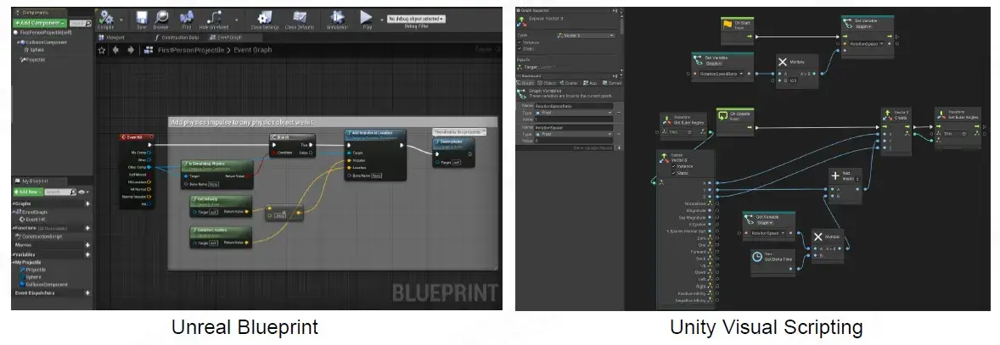
Visual Script is a Program Language
Visual Script 是一种程序语言
Visual script is also a programming language, which usually needs
Visual Script 也是一种编程语言，通常需要
-
Variable
变量
-
Statement and Expression
语句和表达式
-
Control Flow
控制流
-
Function
函数
-
Class (for object-oriented programming language)
类（用于面向对象编程语言）
{kind=link}
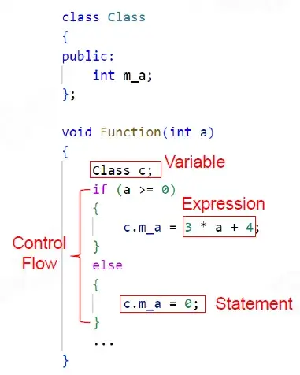
Variable
变量
Preserve the data to be processed or output
保存要处理或输出的数据
-
Type
类型
-
Basic type, e.g. integer, floating
基本类型，例如整数、浮点数
-
Complex type, e.g.structure
复杂类型，例如结构体
-
-
Scope
作用域
-
Local variable
局部变量
-
Member variable
成员变量
-
...
-
{kind=link}
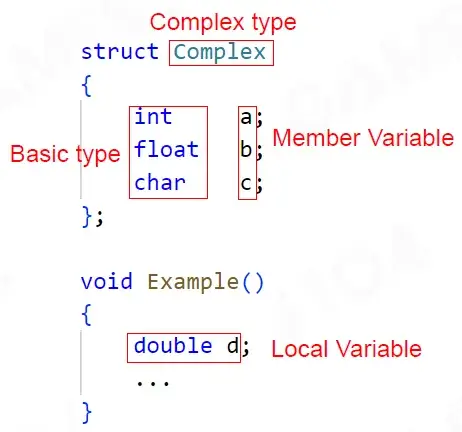
Variable Visualization - Data Pin and Wire
变量可视化 - 数据引脚和数据线
Use data wires through data pins to pass variables (parameters)
通过数据引脚使用数据线传递变量（参数）
-
Each data type uses a unique pin color
每种数据类型都使用独特的引脚颜色
{kind=link}
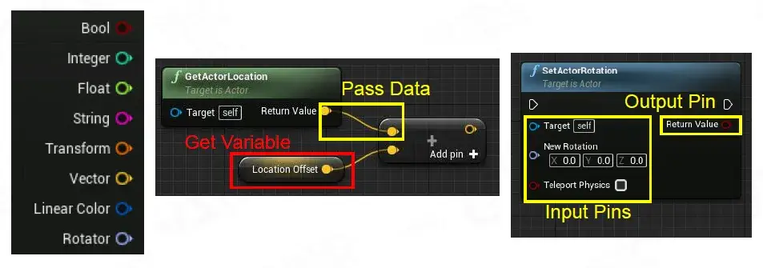
Statement and Expression
语句和表达式
Control how to process data
控制如何处理数据
-
Statement: expresses some action to be carried out
语句：表达要执行的某些操作
-
Assignment Statement
赋值语句
-
Function Statement
函数语句
-
...
-
-
Expression: to be evaluated to determine its value
表达式：要进行求值以确定其值
-
Function Expression
函数表达式
-
Math Expression
数学表达式
-
{kind=link}
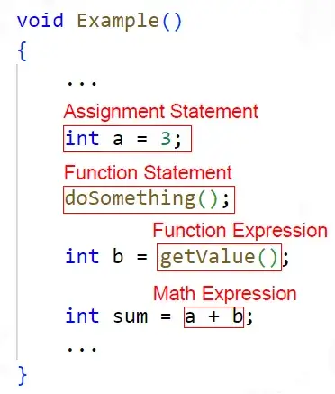
Statement and Expression Visualization - Node
语句和表达式可视化 - 节点
Use nodes to represent statements and expressions
使用节点表示语句和表达式
-
Statement Node
语句节点
-
Expression Node
表达式节点
{kind=link}
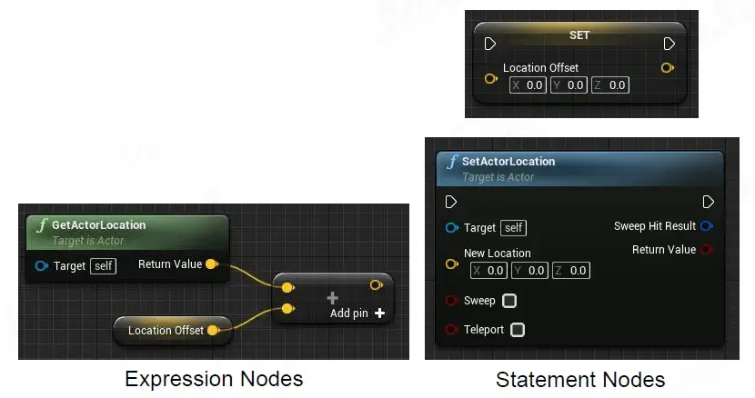
Control Flow
控制流
Control the statement execution order
控制语句的执行顺序
-
Sequence
顺序
-
By default statements are executed one by one
默认情况下，语句会逐个执行
-
-
Conditional
条件
-
Next statement is decided by a condition
下一个语句由条件决定
-
-
Loop
循环
-
Statements are executed iteratively until thecondition is not true
语句会迭代执行，直到条件不成立
-
{kind=link}
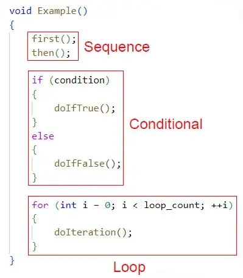
Control Flow Visualization -Execution Pin and Wire
控制流可视化 - 执行引脚和连线
Use execution wires through execution pins to make statements sequence
使用执行连线通过执行引脚来制作语句序列
-
Use control statement nodes to make different control flow
使用控制语句节点来制作不同的控制流
{kind=link}
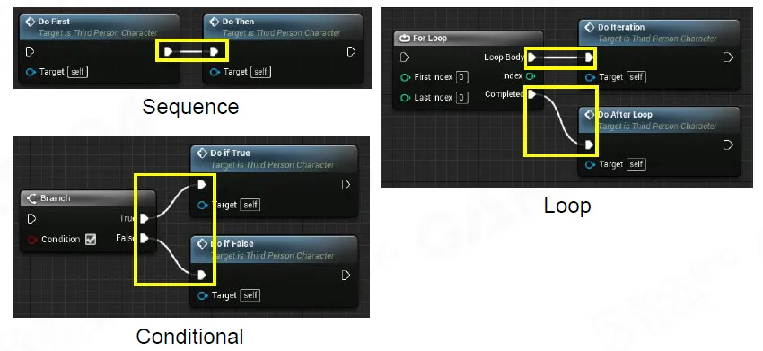
Function
函数
A logic module which take in data, process it and return result(s)
接收数据、处理数据并返回结果的逻辑模块
-
Input Parameter
输入参数
-
The data required input to be processed
需要输入以进行处理的数据
-
-
Function Body
函数主体
-
Control how to process data
控制如何处理数据
-
-
Return value(s)
返回值
-
The data to be returned
要返回的数据
-
{kind=link}
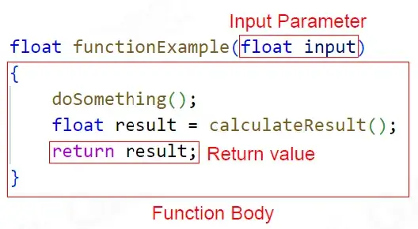
Function Visualization -Function Graph
函数可视化 - 函数图
Use a graph with connected nodes to make a function
使用带有连接节点的图来制作函数
{kind=link}
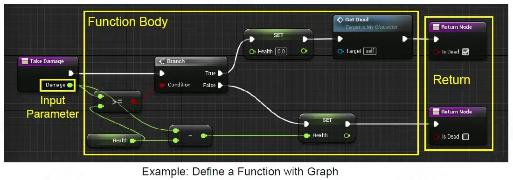
Class
类
A prototype for a kind of objects
一种对象的原型
-
Member Variable
成员变量
-
The lifetime is managed by the object instance
生命周期由对象实例管理
-
-
Member Function
成员函数
-
Can access member variables directly
可以直接访问成员变量
-
Maybe overrided by derived classes
可能被派生类覆盖
-
{kind=link}
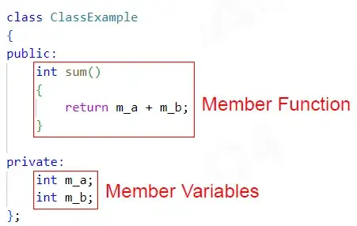
Class Visualization -Blueprint
类可视化 - 蓝图
Use blueprint to define a class that inherits from a native class
使用蓝图定义从本机类继承的类
-
Event Callback Functions
事件回调函数
-
Member Functions
成员函数
-
Member Variables
成员变量
{kind=link}
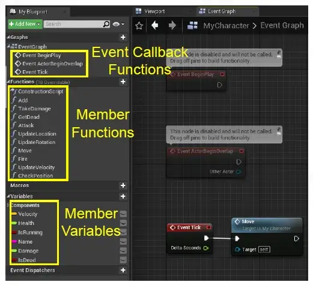
Make Graph User Friendly
使图表更方便用户使用
-
Fuzzy finding
模糊查找
-
Accurate suggestions by type
按类型提供准确建议
Visual Script Debugger
可视化脚本调试器
Debug is an important step among development
调试是开发过程中的重要步骤
Provide user-friendly debug tools for visual scripting
为可视化脚本提供用户友好的调试工具
{kind=link}
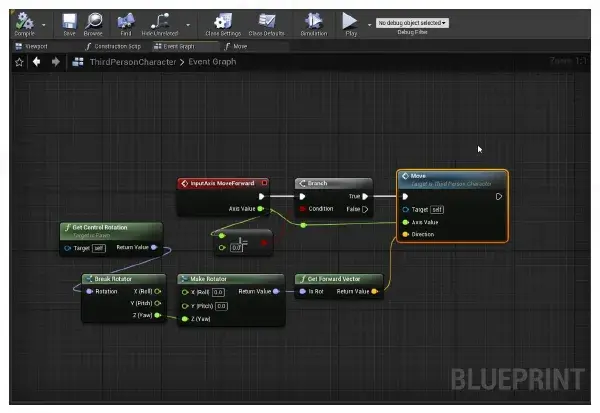
Issues with Visual Scriping (1/2)
可视化脚本问题 (1/2)
Visual script is hard to merge for a team work
可视化脚本很难在团队合作中合并
-
Usually a visual script is stored as a binary file
通常，可视化脚本以二进制文件形式存储
-
Manually reorder script graph is inefficient and error-prone even with a merge tool
即使使用合并工具，手动重新排序脚本图也效率低下且容易出错
{kind=link}
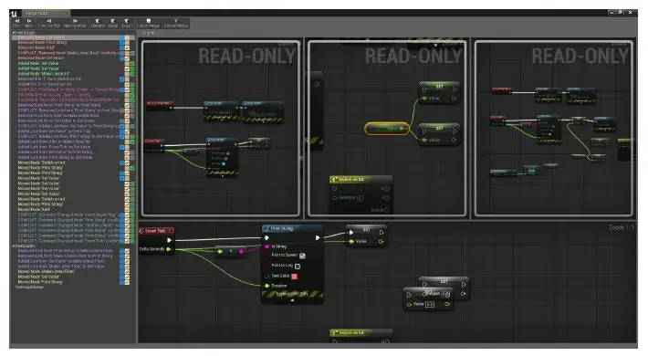
Issues with Visual Scripting (2/2)
The graph can get pretty messy with complex logic
图表可能因逻辑复杂而变得相当混乱
-
Need uniform graph layout rules for a team work
团队合作需要统一的图表布局规则
{kind=link}
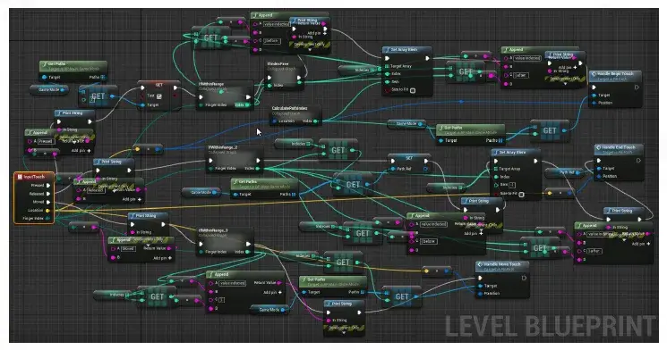
Script and Graph are Twins
脚本和图是双胞胎
{kind=link}
“3C” in Game Play
What is 3C?
3C: Character, Control & Camera
3C：角色、控制和摄像头
3C is the primary element that determines the gameplay experience
3C 是决定游戏体验的主要元素
{kind=link}
Character
角色
In-game character, both player and npc.
游戏中的角色，包括玩家和 NPC。
Include character movement, combat, healthmana, what skills and talents they have, etc.
包括角色移动、战斗、生命值、他们拥有的技能和天赋等。
One most basic element of a character is movement.
角色最基本的元素之一是移动。
{kind=link}
Character: Well-designed Movement
角色：精心设计的动作
Movement looks simple, but it's hard to do well.
动作看似简单，但做好却很难。
In AAA games, every basic state of action needs to bebroken down into detailed states.
在 AAA 游戏中，每个基本动作状态都需要分解为详细状态。
{kind=link}
Extended Character: More complex and varied states
扩展角色：更加复杂多样的状态
{kind=link}
-
Hanging
悬挂
-
Skating
滑冰
-
Diving
跳水
Extended Character: Cooperate with other systems
扩展角色：与其他系统配合
Game effects, sound, environment interaction.
游戏特效、声音、环境互动。
Extended Character: More realistic motion with Physics
扩展角色：更逼真的物理运动
-
Airflow
气流
-
Inertia tensor
惯性张量
-
Torque
扭矩
-
...
{kind=link}
Movement State Machine
运动状态机
{kind=link}
Control
控制
Different input device
不同的输入设备
Different game play
不同的游戏玩法
{kind=link}
A Good Example of Control
From Input to Game Logic
{kind=link}
Control: Zoom in and out
控制：放大和缩小
Control: Aim Assist
控制：瞄准辅助
{kind=link}
让玩家体验更好。如果没有瞄准辅助，有可能因延迟（接受信号输入到逻辑中射弹这段时间）导致玩家无法瞄准。
Control: Feedback
控制：反馈
{kind=link}
一些地方让手柄震动。
Control: Context Awareness
控制：情境感知
Context-sensitive controls
情境敏感控制
-
The same input button produces different effects in different game scenarios
同一输入按钮在不同的游戏场景中产生不同的效果
{kind=link}
Control: Chord & Key Sequences
控制：和弦和按键序列
{kind=link}
Chords
和弦
-
when pressed at the same time, produce a unique behavior in the game
同时按下时，在游戏中产生独特的行为
Key Sequences
按键序列
-
Gesture detection is generally implemented by keeping a brief history of the HlD actions performed by the player
手势检测通常通过保存玩家执行的 HlD 操作的简要历史记录来实现
Camera: Subjective Feelings
相机：主观感受
{kind=link}
Camera Basic: POV & FOV
摄像机基础：POV 和 FOV
POV (point of view)
POV（视点）
-
determines the position of the player to observe
确定玩家观察的位置
FOV (field of view)
FOV（视野）
-
determines the size of the player's viewing Angle
确定玩家视角的大小
{kind=link}
Camera Binding
摄像机绑定
Using POV and rotation to bind.
使用 POV 和旋转进行绑定。
{kind=link}
Camera Control
相机控制
{kind=link}
相机与角色的相对位置不应是完全固定。
Camera Track
相机轨迹
{kind=link}
Camera Effects
相机特效
Provide the camera with more post-visual effects, such as filters and shake.
为相机提供更多后期视觉效果，如滤镜和抖动。
{kind=link}
Many Cameras: Camera Manager
多个摄像机：相机管理
Camera: Subjective Feelings
相机：主观感受
Complex effects are often achieved by multiple base adjustments. To create a sense of speed as an example, we can do:
复杂的效果往往需要通过多次基础调整来实现。以营造速度感为例，我们可以这样做：
-
Add lines in the speed direction
在速度方向上添加线条
-
The character falls backwards
角色向后倒下
-
The dynamic fuzzy
动态模糊
-
Zoom in FOV (to speed up changes in screen content)
放大 FOV（以加快屏幕内容的变化）
loose feeling
放松的感觉
-
Relax camera movement
放松镜头运动
{kind=link}
Cinematic
电影
-
filter, motion, sound, narrator, model, animation, camera movement, ...
滤镜、动作、声音、旁白、模型、动画、镜头运动……
{kind=link}
Camera
相机
For artists and designers to optimize the effect:
供艺术家和设计师优化效果：
-
Inheritable classes
可继承的类
-
Function that can be accessed by Blueprint
蓝图可访问的函数
-
Adjustable parameters
可调整的参数
{kind=link}
Everything is Gameplay.
References
Event Mechanism
- Are Callbacks Always Asynchronous: https://dev.to/marek/are-callbacks-always-asynchronous-bah
- Unreal Engine Documentation Actor Communication: https://docs.unrealengine.com/4.27/en-US/ProgrammingAndScripting/ActorCommunication/
- Publish-subscribe pattern: https://ably.com/topic/pub-sub
- Unreal Engine Event Dispatcher: https://docs.unrealengine.com/4.27/en-US/ProgrammingAndScripting/Blueprints/UserGuide/EventDispatcher/
Script
- A Classification of Scripting Systems for Entertainment and Serious Computer Games, 2011: http://eprints.bournemouth.ac.uk/20555/4/vsgames2011postprint.pdfProgramming
- Language and Compiler Benchmarks: https://programming-language-benchmarks.vercel.app
- Lua official site: https://www.lua.org/
- LuaJIT official site: https://luaiit.org/
- Unity C# Scripting Manual: https://docs.unity3d.com/Manual/ScriptingSection.html
- Implementing a Scripting Engine: https://www.flipcode.com/archives/lmplementing_A_Scripting_Engine-Part_1_Overview.shtml
- Scripting Virtual Machine and Bvtecode: http://gameprogrammingpatterns.com/bytecode.html
Visual Scripting
- Unreal Engine Blueprints Visual Scripting: https://docs.unrealengine.com/5.0/en-US/blueprints-visual-scripting-in-unreal-engine/
- Unity Visual Scripting: https://unity.com/features/unity-visual-scripting
- Programming Language Design: https://cs.lmu.edu/~ray/notes/languagedesignnotes
- Blueprint Merge Tool: https://github.com/KennethBuijssen/MergeAssist
Gameplay and 3C
-
Level Up! The Guide to Great Video Game Design 2nd Edition, Scott Rogers, 2014
-
Game Engine Architecture Third Edition, Jason Gregory, 2018
-
The 3Cs of Game Development: https://www.pluralsight.com/blog/film-games/character-controlscamera-3cs-game-development
第十六节：游戏引擎 Gameplay 玩法系统：基础 AI
Basic Artificial Intelligence
基础人工智能
Outline of Artificial intelligence Systems
人工智能系统概述
Al Basic
人工智能基础
-
Navigation
导航
-
Steering
转向
-
Crowd Simulation
人群模拟
-
Sensing
感知
-
Classic Decision Making Algorithms
经典决策算法
Advanced Al
高级人工智能
-
Planning and Goals
规划和目标
-
Machine Learning
机器学习
Navigation
导航
Navigation In Games
游戏中的导航
Find paths from a location to another in an automatic manner
自动查找从一个位置到另一个位置的路径
{kind=link}
Navigation Steps
导航三步骤
{kind=link}
-
Map representation
地图表示
-
Path finding
路径查找
-
Path smoothing
路径平滑
Map Representations - Walkable Area
地图表示 - 可行走区域
-
We need to tell Al agents where they can walk - Walkable area
我们需要告诉人工智能代理他们可以走到哪里 - 可行走区域
-
Walkable area of players is determined by character motion capabilities
玩家的可行走区域由角色运动能力决定
-
Physical Collision
物理碰撞
-
Climbing slope/height
爬坡/高度
-
Jumping distance
跳跃距离
-
...
-
-
Simulating movement of Al agents as players costs too much
模拟人工智能代理作为玩家的移动成本太高
-
Al agents are still expected to have the same walkable area as players
人工智能代理仍然需要与玩家拥有相同的可行走区域
Map Representations - Formats
地图表示 - 格式
-
Waypoint Network
航点网络
-
Grid
网格
-
Navigation Mesh
导航网格
-
Sparse Voxel Octree
稀疏体素八叉树
Waypoint Network
航点网络
-
Network connecting critical points (waypoints) from the map
连接地图上关键点（航点）的网络
-
Waypoint sources:
航点来源：
-
Designed important locations（下图中红点）
设计重要位置
-
Corner points to cover walkable area（下图中绿点）
角点覆盖可步行区域
-
Internal points to connect near-by waypointsadding flexibility to navigation（下图中蓝点）
内部点连接附近的航点，为导航增添灵活性
-
{kind=link}
魔兽争霸就使用了航点网络。
Usage of waypoint network is similar to subway system
航点网络的使用方式与地铁系统类似
-
Find the nearest points to get on and off the network
查找最近的上下车点
-
Plan the path on the waypoint network
规划航点网络上的路径
{kind=link}
Pros:
优点：
-
Easy to implement
易于实施
-
Fast path finding, even for large maps
路径查找速度快，即使对于大型地图也是如此
Cons:
缺点：
-
Limited flexibility: must go to the nearest point inthe network before navigation
灵活性有限：导航前必须前往网络中的最近点
-
Waypoint selection requires manual intervention
航点选择需要人工干预
{kind=link}
Grid
网格
-
Intuitive discretization of map
直观的地图离散化
-
Uniform subdivision into small regular grid shapes
均匀细分为小的规则网格形状
-
Common grid shapes
常见的网格形状
-
Square
正方形
-
Triangle
三角形
-
Hexagon
六边形
-
{kind=link}
像文明五这样的六边形网格不易在内存中分配存储空间。
Grid property could be modified in runtime to reflect dynamic environmental changes
可以在运行时修改网格属性以反映动态环境变化
{kind=link}
Pros:
优点：
-
Easy to implement
易于实现
-
Uniform data structure
统一的数据结构
-
Dynamic
动态
Cons:
缺点：
-
Accuracy depends on grid resolution
精度取决于网格分辨率
-
Dense grid lowers pathfinding performance
密集的网格会降低寻路性能
-
High memory consumption
内存消耗高
-
Hard to handle 3D map
难以处理 3D 地图
{kind=link}
导航网络难以处理 3D 地图。
Navigation Mesh (NavMesh)
导航网格 (NavMesh)
-
Solves the problem of representing overlapped walkable areas
解决表示重叠可行走区域的问题
-
Approximates the walkable area of character controller based on physical collision and motion capabilities
根据物理碰撞和运动能力估计角色控制器的可行走区域
-
Lowers network density to boost pathfinding performance
降低网络密度以提高寻路性能
{kind=link}
NavMesh Example
NavMesh 示例
Neighboring 3D convex polygons to represent walkable areas
相邻的 3D 凸多边形表示可行走区域
{kind=link}
Convex Polygon of NavMesh
NavMesh 的凸多边形
Why convex polygon?
为什么是凸多边形？
-
Pathfinding generates a series of polygon (Polygon Corridor) need to walk through
寻路会生成一系列需要穿过的多边形（多边形走廊）
-
Convexity guarantees the final path is limited inthe polygon and two adjacent polygons have onlyone common edge (Portal)
凸性保证最终路径仅限于多边形内，并且两个相邻多边形只有一个共同边（传送门）
{kind=link}
NavMesh Pros and Cons
NavMesh 的优缺点
Pros:
优点：
-
Support 3D walkable surface
支持 3D 可行走表面
-
Accurate
准确
-
Fast in pathfinding
寻路速度快
-
Flexible for selection of start/destination
可灵活选择起点/终点
-
Dynamic
动态
Cons:
缺点：
-
Complex generation algorithm
生成算法复杂
-
Not support 3D space
不支持 3D 空间
{kind=link}
Sparse Voxel Octree
稀疏体素八叉树
-
Represents "flyable" 3D space
表示“可飞行”的 3D 空间
-
Similar to spatial partitioning
类似于空间分区
-
Finest level voxels represents complicated boundary
最精细级别的体素表示复杂边界
-
Coarser-level voxels represents uniform regions
较粗糙级别的体素表示均匀区域
{kind=link}
Path Finding
路径查找
Distances in map representations can be abstracted as edge costs in graph
地图表示中的距离可以抽象为图中的边成本
{kind=link}
{kind=link}
Depth-First Search
深度优先搜索
Expand most recently added
展开最近添加的
Breadth-First Search
广度优先搜索
Expand least recently added
展开最近最少添加的
Dijkstra Algorithm
for each vertex v:
dist[v] = ∞
prev[v]= none
dist[source]= 0
set all vertices to unexplored
while destination not explored:
v = least-valued unexplored vertex
set v to explored
for each edge(v, w):
if dist[v] + len(v,w) < dist[w]:
dist[w]= dist[v]+ len(v, w)
prev[W]=V总是能搜索到图中两点间最短距离。
A Star (A*)
-
Expand lowest cost in list
扩展列表中成本最低的元素
-
Distance is known distance from source + heuristic
距离是距源的已知距离 + 启发式
-
Greedy: stops when reaches the goal
贪婪：达到目标时停止
A* - Cost calculation
Cost calculation:
成本计算：
-
: the exact cost of the path from the start to node
：从起点到节点 的路径的准确成本
-
: the estimated cost from node to the goal
：从起点到节点 的路径的准确成本
{kind=link}
A* - Heuristic On Grids
A* - 网格启发式算法
-
For 4 directions of movement, we can use Manhattan distance
对于 4 个移动方向，我们可以使用曼哈顿距离（来计算 和 ）
-
: cost for moving to the adjacent node
：移动到相邻节点的成本
-
{kind=link}
A*- Heuristic On NavMesh
A*- NavMesh 上的启发式方法
Multiple choices when evaluating cost on NavMesh
评估 NavMesh 上的成本时有多种选择
-
Using polygon centers or vertices usually over-estimate the cost
使用多边形中心或顶点通常会高估成本
-
Using hybrid method introduces too many points to check
使用混合方法会引入太多要检查的点
-
Midpoints of edges - a good balance
（选用区域的）边缘的中点 - 良好的平衡
{kind=link}
-
On a navigation mesh that allows any angle ofmovement, use a straight line distance
在允许任意角度移动的导航网格上，使用直线距离
-
Use midpoint of the edge entering the currentnode as node cost calculation point
使用进入当前节点的边缘中点作为节点成本计算点
-
: the cost for moving unit distance in any direction
：向任意方向移动单位距离的成本
{kind=link}
A*-NavMesh Walkthrough
A*-NavMesh 演练
{kind=link}
A*- Heuristic
A*- 启发式
-
controls 's behavior.
控制 的行为。
-
With 100% accurate estimates, get shortest paths quickly
以 100% 准确的估计，快速获得最短路径
-
Too low, continue to get shortest paths, but slow down
太低，继续获得最短路径，但速度会减慢
-
Too high, exit early without shortest pathBalance between pathfinding speed and accuracy
太高，提前退出，没有最短路径在寻路速度和准确性之间取得平衡
Path Smoothing
路径平滑
-
Why we need path smoothing
为什么我们需要路径平滑
-
Zigzag, many unnecessary turns
之字形，许多不必要的转弯
-
-
“String Pulling”- Funnel Algorithm
“拉线”- 漏斗算法
{kind=link}
Path Smoothing-Funnel Algorithm
路径平滑漏斗算法
-
The scope of the funnel is the possible scope of the path
漏斗的范围是路径的可能范围
-
Narrow the funnel if necessary to fit the portal
必要时缩小漏斗以适应门户
{kind=link}
Terminate when the goal is in the funnel
当目标处于漏斗中时终止
{kind=link}
NavMesh Generation-Voxelization
NavMesh 生成-体素化
Sample collision scene by voxelization
通过体素化示例碰撞场景
{kind=link}
NavMesh Generation-Region Segmentation
NavMesh 生成-区域分割
-
Calculate the distance of each voxel to border
计算每个体素到边界的距离
-
Mark border voxels by AgentRadius to avoid clipping
通过 AgentRadius 标记边界体素以避免剪切
{kind=link}
Watershed Algorithm
分水岭算法
-
Gradually “flood” the "terrain"
逐渐“淹没”“地形”
-
Form "watershed" (dividing ridge) when "pools" meet
当“水池”相遇时形成“分水岭”（分水岭）
{kind=link}
Segment the “neighboring" voxels into regions to provide a good basis for polygon mesh
将“相邻”体素分割成区域，为多边形网格提供良好的基础
{kind=link}
Regions don't have overlapping voxels in 2D
区域在 2D 中没有重叠体素
{kind=link}
NavMesh Generation-Mesh Generation
NavMesh 生成-网格生成
Generate NavMesh from segmented regions
从分段区域生成 NavMesh
{kind=link}
现在有插件来实现这个。
NavMesh Advanced Features-Polygon Flag
NavMesh 高级功能-多边形标记
Useful for marking terrain types: plains, mountain, water, etc.
用于标记地形类型：平原、山脉、水域等。
-
“Paint colors" to add user-defined regions
“绘制颜色”以添加用户定义的区域
-
Polygons generated from user-defined regions have special flag
从用户定义的区域生成的多边形具有特殊标记
{kind=link}
NavMesh Advanced Features-Tile
NavMesh 高级功能-Tile
-
Fast for responding to dynamic objects
快速响应动态对象
-
Avoid rebuilding the entire NavMesh
避免重建整个 NavMesh
-
TileSize - trade-off between pathfinding and dynamic rebuilding performance
TileSize- 寻路和动态重建性能之间的权衡
{kind=link}
在游戏中，导航网络可能会发生变化。
NavMesh Advanced Features-Off-mesh Link
NavMesh 高级功能-网格外链接
Allow agents to jump or teleport
允许代理跳跃或传送
{kind=link}
Steering
转向
From Path to Motion
从路径到运动
-
Cars cannot follow planned path exactly
汽车无法完全遵循计划的路径（车辆具有转向半径）
-
Motion of cars are limited by theirs motion abilities:
汽车的运动受到其运动能力的限制：
-
Linear acceleration (throttle/brake)
线性加速度（油门/刹车）
-
Angular acceleration (steering force)
角加速度（转向力）
-
-
Motion needs to be adjusted according to the limits
运动需要根据限制进行调整
{kind=link}
Steering Behaviors
转向行为
{kind=link}
-
Seek / Flee
寻找 / 逃跑
-
Velocity Match
速度匹配（从起点出发加速，减速到终点停止）
-
Align
对齐（让车头朝着某个方向）
Seek/Flee
寻找/逃跑
Steer the agent towards / away from the target
引导代理朝向/远离目标
-
Position matching in the nature
自然中的位置匹配
-
Accelerate with max acceleration towards / away from the target
以最大加速度朝向/远离目标加速
-
Will oscillate around the target
会围绕目标振荡
-
Input:
输入：
-
Self position
自身位置
-
Target position
目标位置
-
-
Output:
输出：
-
Acceleration
加速度
-
{kind=link}
Seek / Flee Variations
寻找 / 逃离变体
Modifying the target in runtime can generate new steering behaviors
在运行时修改目标可以生成新的转向行为
{kind=link}
-
Pursue
追寻
-
Path Following
路径跟随
-
Wander
漫游
-
Flow Field Following
流场跟随
Velocity Match
速度匹配
Matches the target velocity
匹配目标速度
-
Calculate acceleration from matching time and velocity differences
根据匹配时间和速度差异计算加速度
-
Clamp the acceleration by maximum acceleration of agents
通过代理的最大加速度限制加速度
-
Input:
输入：
-
Target velocity
目标速度
-
Self velocity
自身速度
-
Matching time
匹配时间
-
-
Output:
输出：
-
Acceleration
加速度
-
Align
对齐
Matches target orientation
匹配目标方向
-
Input:
输入：
-
Target orientation
目标方向
-
Self orientation
自我定位
-
-
Output:
输出：
-
Angular acceleration
角加速度
-
{kind=link}
Crowd Simulation
人群模拟
Crowd
人群
A large group of individuals share information in the same environment alone or in a group
一大群人单独或成群地在同一环境中分享信息
-
Collision avoidance
避免碰撞
-
Swarming
蜂拥
-
Motion in formation
形成队列运动
-
...
{kind=link}
Crowd Simulation Models
人群模拟模型
-
Started from "Boids" system of Reynolds
从雷诺的 "Boids" 系统开始
-
Three families of models:
三个模型系列：
-
Microscopic models
微观模型
-
"Bottom-Up"
“自下而上”
-
Focus on individuals
关注个体
-
-
Macroscopic models
宏观模型
-
Crowd as a unified and continuous entity
人群作为一个统一且连续的实体
-
-
Mesoscopic models
中观模型
-
Divide the crowd into groups
将人群分成几组
-
-
Microscopic Models-Rule-based Models
微观模型-基于规则的模型
Flock dynamics of animal crowds as an emergent behavior by modeling motion of each individuals with simple predefined rules:
通过使用简单的预定义规则对每个个体的运动进行建模，将动物群体的群体动态视为一种突发行为：
-
Separation: to steer away from all of its neighbors
分离：远离所有邻居
-
Cohesion: to steer towards the "center of mass"
凝聚：转向“重心”
-
Alignment: to line up with agents close by
对齐：与附近的代理对齐
{kind=link}
-
Separation
分离
-
Cohesion
凝聚
-
Alignment
对齐
{kind=link}
Easy to implement, but not suitable to simulate complex behavior rules.
易于实现，但不适合模拟复杂的行为规则。
Macroscopic Models
宏观模型
Simulate crowd motion from a macro perspective
从宏观角度模拟人群运动
-
Treat the crowd as a unified and continuous entity
将人群视为统一且连续的实体（避免逐个计算影响性能）
-
Control motions with potential field or fluid dynamics
用势场或流体动力学控制运动
-
Does not consider interactions between individualsand the environment in individual level
不考虑个体与环境在个体层面上的相互作用
{kind=link}
Mesoscopic Models
中观模型
Simulate crowd motion taking care of both details and the whole
模拟人群运动，兼顾细节和整体
-
Divide the crowd into groups
将人群分成几组
-
Deals with interactions between groups and individuals in each group
处理群体之间以及每个群体中个人之间的互动
-
combinations of microscopic models and formation rules or psychological models
微观模型与形成规则或心理模型的组合
{kind=link}
Collision Avoidance-Force-based Models
基于防撞力的模型
-
A mixture of socio-psychological and physical forces influencing the behavior in a crowd
影响人群行为的社会心理和物理力量的混合
-
The actual movement of an individual depends on the desired velocity and its interaction with the environment
个人的实际运动取决于所需速度及其与环境的相互作用
-
Can simulate dynamical features of escape crowd panic
可以模拟逃离人群恐慌的动态特征
{kind=link}
Pros:
优点：
-
can be extended to simulate more emergent behaviors of human crowds
可以扩展以模拟更多人群突发行为
Cons:
缺点：
-
Similar to physics simulation, simulation step should be small enough
与物理模拟类似，模拟步骤应该足够小
{kind=link}
Collision Avoidance-Velocity-based models
碰撞避免-基于速度的模型
Consider the neighbor information to make decisions in velocity space
考虑邻居信息以在速度空间中做出决策
-
able to simulate in local space
能够在局部空间中进行模拟
-
applied to collision avoidance
应用于碰撞避免
Reciprocal Velocity obstacle methods-Current standard collision avoidance algorithms
相互速度障碍方法-当前标准碰撞避免算法
-
Velocity Obstacle (VO)
速度障碍 (VO)
-
Reciprocal Velocity Obstacle (RVO)
相互速度障碍 (RVO)
-
Optimal Reciprocal Collision Avoidance (ORCA)
最佳相互碰撞避免 (ORCA)
{kind=link}
Velocity obstacle (VO)
速度障碍 (VO)
-
Calculate its own dodge velocity, assuming other agent is unresponsive
假设其他代理没有响应，计算自己的躲避速度
-
Appropriate for static and unresponsive obstacles
适用于静态和无响应的障碍物
-
Overshoot
超调
-
Causes oscillation between two agents attempting to avoid each other
导致两个试图相互避开的代理之间发生振荡
{kind=link}
Reciprocal Velocity Obstacle (RVO)
相互速度障碍 (RVO)
-
Assuming the other agent is using the same decision process (mutually cooperating)
假设其他代理使用相同的决策过程（相互合作）
-
Both sides move half way out of the way ofa collision
双方都向半路移动以避免碰撞
-
Only guarantees no oscillation and avoidance for two agents
仅保证两个代理不会发生振荡和避免碰撞
Optimal Reciprocal Collision Avoidance (ORCA)
最佳相互碰撞避免 (ORCA)
{kind=link}
Sensing
传感
Sensing or Perception
传感或感知
{kind=link}
Internal Information
内部信息
-
Information of the agent itself
agent 本身的信息
-
Position
位置
-
HP
生命值
-
Armor status
护甲状态
-
Buff status
增益状态
-
...
-
-
Can be accessed freely
可自由访问
Static Spatial information
静态空间信息
{kind=link}
-
Navigation Data
导航数据
-
Tactical Map
战术地图
-
Smart Object
智能对象
-
Cover Point
掩护点
Dynamic Spatial information (1/2) - influence Map
动态空间信息（1/2）- 影响力地图
{kind=link}
Dynamic Spatial Information (2/2) - Game Objects
动态空间信息 (2/2) - 游戏对象
-
Information being sensed from a character
从角色感知到的信息
-
Multiple character information can exist for a single character as it can be sensed by multiple agents
单个角色可以存在多个角色信息，因为它可以被多个代理感知
-
Usually contains:
通常包含：
-
Game Object lD
游戏对象 ID
-
Visibility
可见性
-
Last Sensed Method
最后感知的方法
-
Last Sensed Position
最后感知的位置
-
Sensing Simulation
传感模拟
-
Light, sound, and odor travels in space
光、声音和气味在空间中传播
-
Have max traveling range
具有最大传播范围
-
Attenuates in space and time with different patterns
以不同的模式在空间和时间中衰减
-
Sight is blocked by obstacles
视线被障碍物阻挡
-
Smelling ranges shrinks over time
嗅觉范围随时间缩小
-
-
Radiating field can simulate sensing signals
辐射场可以模拟传感信号
-
Can be simplified as Influence Map
可以简化为影响图
-
Agents covered by the field can sense the information
场覆盖的代理可以感知信息
-
{kind=link}
Classic Decision Making Algorithms
经典决策算法
Decision Making Algorithms
决策算法
-
Finite State Machine
有限状态机
-
Behavior Tree
行为树
-
Hierarchical Tasks Network
分层任务网络
-
Goal Oriented Action Planning
目标导向行动规划
-
Monte Carlo Tree Search
蒙特卡洛树搜索
-
Deep Learning
深度学习
Finite State Machine
有限状态机
-
Change from one State to another according to some Conditions
根据某些条件从一个状态变为另一个状态
-
The change from one state to another is called a Transition
从一个状态到另一个状态的改变称为转换
{kind=link}
{kind=link}
游戏 AI 经典案例——吃豆人。
Finite State Machine - Pros & Cons
有限状态机 - 优点和缺点
Pros:
优点：
-
Easy to implement
易于实现
-
Easy to understand
易于理解
-
Very fast to deal with simple case
处理简单情况非常快
Cons:
缺点：
-
Maintainability is bad, especially add or remove state
可维护性差，尤其是添加或删除状态
-
Reusability is bad, can't used in other projects or characters
可重用性差，不能用于其他项目或角色
-
Scalability is bad, hard to modify for complicated case
可扩展性差，复杂情况下难以修改
{kind=link}
Hierarchical Finite State Machine (HFSM)
分层有限状态机 (HFSM)
Tradeoff between reactivity and modularity
反应性和模块化之间的权衡
-
Reactivity: the ability to quickly and efficiently react to changes
反应性：快速高效地对变化做出反应的能力
-
Modularity: the degree to which a system's components may be separated into building blocks, and recombined
模块化：系统组件可分离成构建块并重新组合的程度
{kind=link}
Behavior Tree (BT)
Behavior Tree
Focus on state abstraction and transition conditions
关注状态抽象和转换条件
{kind=link}
Similar to human thinking:
类似于人类的思维：
-
If ghost close, run away
如果鬼靠近，就逃跑
-
But if I'm powerful, chase it
但如果我很强大，就去追它
-
Otherwise, eating
否则，就吃
{kind=link}
Behavior Tree - Execution Nodes
行为树 - 执行节点
Execution node (leaf node)
执行节点（叶节点）
-
Condition node
条件节点
-
Action node
动作节点
{kind=link}
Behavior Tree - Control Nodes
行为树-控制节点
Control flow node (internal node)
控制流节点（内部节点）
-
Control flow determined by the return value of child nodes
控制流由子节点的返回值决定
-
Each node has a return value which is success failure or running
每个节点都有一个返回值，即成功、失败或正在运行
{kind=link}
Control Node-Sequence (1/2)
控制节点顺序 (1/2)
-
Order
顺序
-
Execute children from left to right
从左到右执行子节点
-
-
Stop Condition and Return Value
停止条件和返回值
-
until one child returns Failure or Running then return value accordingly
直到一个子节点返回失败或正在运行，然后相应地返回值
-
or all children return Success, then return Success
或所有子节点都返回成功，然后返回成功
-
-
lf Stop and Return Running
如果停止并返回正在运行
-
the next execution will start from the running action
下一次执行将从正在运行的操作开始
-
{kind=link}
Control Node-Sequence (2/2)
Sequence
序列
-
Allows designers to make a "plan"
允许设计师制定“计划”
{kind=link}
Control Node-Selector (1/2)
控制节点选择器 (1/2)
-
Order
顺序
-
Execute children from left to right
从左到右执行子节点
-
-
Stop Condition and Return Value
停止条件和返回值
-
until one child returns Success or Running, then return value accordingly
直到一个子节点返回 Success 或 Running，然后相应地返回值
-
or all children return Failure, then return Failure
或所有子节点都返回 Failure，然后返回 Failure
-
-
If Stop and Return Runningthe next execution will start from the runningaction
如果 Stop 并 Return Running，则下一次执行将从 running 操作开始
{kind=link}
Control Node-Selector (2/2)
控制节点选择器 (2/2)
Selector
选择器
-
Could select one action to do response to different environment
可以选择一个动作来响应不同的环境
-
Could do the right thing according to priority
可以根据优先级做正确的事情
{kind=link}
Control Node- Parallel (1/2)
控制节点 - 并行 (1/2)
-
Order
顺序
-
Logically execute all children simultaneously
逻辑上同时执行所有子节点
-
-
Stop Condition and Return Value
停止条件和返回值
-
Return Success when at least M childnodes (between 1 and N) have succeeded
当至少 M 个子节点（介于 1 和 N 之间）成功时返回成功
-
Return Failure when at least N - M + 1 child nodes (between 1 and N) have failed
当至少 N - M + 1 个子节点（介于 1 和 N 之间）失败时返回失败
-
Otherwise return Running
否则返回正在运行
-
-
If Stop and Return Running
如果停止并返回正在运行
-
the next execution will start from the running actions
下一次执行将从正在运行的操作开始
{kind=link}
Control Node - Parallel (2/2)
控制节点 - 并行 (2/2)
Parallel
并行
-
Could do multiple things "at the same time"
可以同时做多件事
{kind=link}
Behavior Tree
行为树
Execution nodes
执行节点
-
Action
操作
-
Condition
条件
Control flow nodes
控制流节点
-
Sequence
序列
-
Selector
选择器
-
Parallel
并行
{kind=link}
{kind=link}
{kind=link}
{kind=link}
{kind=link}
Tick a Behavior Tree
勾选行为树
-
The tick of BT is like thinking
BT 的勾选就像思考
-
Every tick start from root node
每次勾选都从根节点开始
-
Go through different nodes from up to down, left to right
从上到下、从左到右遍历不同的节点
-
Each node must return failure, success or running
每个节点必须返回失败、成功或正在运行
{kind=link}
Behavior Tree-Decorator (1/2)
行为树装饰器 (1/2)
Decorator
装饰器
-
A special kind of control node with a single child node
一种特殊的控制节点，只有一个子节点
-
Usually some behavior pattern which is commonly used
通常是一些常用的行为模式
{kind=link}
- For example, some common policies:
- Loop execution
- Execute once
- Timer
- Time Limiter
- Value Modifier
- Etc.
Behavior Tree - Decorator (2/2)
行为树 - 装饰器 (2/2)
Decorator
装饰器
-
Example: Use timer to implement "patrol"
示例：使用计时器实现“巡逻”
{kind=link}
Behavior Tree-Precondition
行为树-前提条件
Simplify behavior tree structure with preconditions
使用前提条件简化行为树结构
{kind=link}
Behavior Tree-Blackboard
行为树-黑板
Blackboard: the memory of behavior tree
黑板：行为树的记忆
{kind=link}
Behavior Tree - Pros
行为树 - 优点
-
Modular, Hierarchical organization
模块化、分层组织
-
each subtree of a BT can be seen as a module, with a standard interface given by the return statuses
BT 的每个子树都可以看作一个模块，具有由返回状态给出的标准接口
-
-
Human readable
人类可读
-
Easy to maintain
易于维护
-
Modification only affect parts of tree
修改仅影响树的部分
-
{kind=link}
-
Reactivity
反应性
-
Think every tick to quickly change behavior according to environment
思考每一次滴答，根据环境快速改变行为
-
-
Easy to Debug
易于调试
-
Every tick is a whole decision making process, so that it is easy to debug
每一次滴答都是一个完整的决策过程，因此易于调试
-
{kind=link}
Behavior Tree - Cons
行为树 - 缺点
Cons
缺点
-
Each tick starts from root node which costs much more
每次更新都从根节点开始，成本更高
-
The more reactive, the more condition to be checked andthe more costs per tick
反应性越高，需要检查的条件就越多，每次更新的成本就越高
Upcoming: Al Planning and Goals
即将推出：人工智能规划和目标
To make the Al more deliberative, game designers introduced the Al Planning technique to improve the planning ability of Al
为了让人工智能更具深思熟虑，游戏设计师引入了人工智能规划技术来提高人工智能的规划能力
Al Planning:
人工智能规划：
-
Manage a set of actions
管理一组动作
-
A planner make a plan according tothe initial world state
规划者根据初始世界状态制定计划
{kind=link}
Reference
Navigation
-
Amit Patel's fabulous website with animated demonstration of pathfinding algorithms:http://theory.stanford.edu/~amitp/GameProgramming/
-
In-depth explanation of Detour Recast Navmesh generation algorithm:
-
Al Summit: 'Death Stranding': An Al Postmortem, Eric Johnson, Kojima Productions, GDc 2021: https://gdcvault.com/play/1027144/A1-Summit-Death-Stranding-An
-
Getting off the NavMesh: Navigating in Fully 3D Environments, Dan Brewer, Digital Extremes, GDc2015: https://gdcvault.com/play/1022016/Getting-off-the-NavMesh-Navigating
-
Mikko Mononen, Author of Recast Detour, blog on Funnel Algorithm :http://digestingduck.blogspot.com/2010/03/simple-stupid-funnel-algorithm.html?m=1
Steering & Sensing
- Steering Behaviors For Autonomous Characters, Craig W. Reynolds, Sony Computer Entertainment America: https://www.researchgate.net/publication/2495826_Steering_Behaviors_For_Autonomous_Characters
- Al For Games, lan Millington, 3rd Edition, CRC Press, 2019
- Knowledge is Power, an Overview of Al Knowledge Representation in Games, Daniel Brewer: http://ww.gameaipro.com/GameAlProOnlineEdition2021/GameAlProOnlineEdition2021_Chapter04Knowledge_is_Power_an_Overview_of_Al_Knowledge_Representation_in_Games.pdf
Crowd Simulation
- A review on crowd simulation and modeling, Shanwen Yang, Tianrui Li, Xun Gong, Bo Peng, Jie Hu: https://www.sciencedirect.com/science/article/abs/pii/S1524070320300242
- Forced-Based Anticipatory Collision Avoidance in Crowd Simulations, Stephen Guy, loannisKaramouzas, University of Minnesota, GDc 2015: https://www.gdcvault.com/play/1022465/ForcedBased-Anticipatory-Collision-Avoidance
- RVO and ORCA How They Really Work, Ben Sunshine-Hill.https:/www.taylorfrancis.com/chapters/edit10.1201/9780429055096-22/rvo-orca-ben-sunshine-hilRVO2
- Library: Reciprocal Colision Avoidance for Real-Time Multi-Agent Simulation, Jur van denBerg, et al.: https://gamma.cs.unc.edu/RVO2/
- Documentation of Al systems in Unreal Engine 5: https://docs.unrealengine.com/5.0/en-US/artificialintelligence-in-unreal-engine/
Classical Decision Making Algorithms
- Behavior Trees in Robotics and Al: an lntroduction, Michele Colledanchise and Petter Ogre, 1st EditionCRC Press, 2018. https://www.researchgatenetpublication/319463746_Behavior_Trees_in_Robotics_and_Al_An_introduction
- The Behavior Tree Starter Kit, Alex Champandard, Philip Dunstan, Game Al Pro, 2013.http://www.gameaipro.com/GameAlPro/GameAlPro_Chapter06_The_Behavior_Tree-Starter-Kit.pdf
- FSM: Finite-State Machines: Theory and lmplementation, https://gamedevelopment.tutsplus.com/tutorials/finite-state-machines-theory-and-implementation-.gamedev-11867
- Managing Complexity in the Halo 2 Al System, Damian lsla, Moonshot Games, GDc 2005: https://www,tavlorfrancis,com/chapters/edit10.1201/9780429055096-22/rvo-orca-ben-sunshine-hil
第十七节：游戏引擎 Gameplay 玩法系统：高级 AI
Adavanced Artificial Intelligence
高级 AI
-
Hierarchical Tasks Network
分层任务网络
-
Goal-Oriented Action Planning
目标导向行动规划
-
Monte Carlo Tree Search
蒙特卡洛树搜索
-
Machine Learning Basic
机器学习基础
-
Build Advanced Game Al
构建高级游戏人工智能
Hierarchical Tasks Network
层次任务网络
Overview
HTN assumes there are many Hierarchical tasks
HTN 假设存在许多分层任务
{kind=link}
Make a Plan like Human
像人类一样制定计划
Hierarchical:
分层：
-
people in real world usually make their plan hierarchically
现实世界中的人们通常分层制定计划
{kind=link}
为了完成 Take a class，我可能需要做出的 Method。
HTN Framework (1/2)
HTN 框架
World state
世界状态
-
Contains a bunch of properties
包含一系列属性
-
Input to planner, reflect the status of world
输入到规划器，反映世界的状态
-
It's a Subject World View in Al Brain
它是人工智能大脑中的主体世界观
Sensors
传感器
-
Perceive changes of environment and modify world state
感知环境变化并修改世界状态
-
It's more like Perception
它更像是感知
{kind=link}
HTN Framework (2/2)
HTN Domain
HTN 域
-
Load from asset
从资产加载
-
Describe the relationship of hierarchical tasks
描述分层任务的关系
Planner
规划器
-
Make a plan from World State and HTN Domain
根据世界状态和 HTN 域制定计划
Plan Runner
计划运行器
-
Running the plan
运行计划
-
Update the world state after the task
任务完成后更新世界状态
{kind=link}
HTN Task Types
HTN 任务类型
Two types of Tasks
两种类型的任务
-
Primitive Task
原始任务
-
Compound Task
复合任务
{kind=link}
Primitive Task (1/2)
原始任务 (1/2)
-
Preconditions
前提条件
-
Determine whether an action could be executed
确定是否可以执行某个操作
-
Check whether properties of game world being satisfied
检查游戏世界的属性是否得到满足
-
-
Action
操作
-
Determine what action the primitive task executes
确定原始任务执行什么操作
-
-
Effects
效果
-
Describe how the primitive task modify the game world state properties
描述原始任务如何修改游戏世界状态属性
-
{kind=link}
{kind=link}
- 前提条件：有解药
- 操作：使用解药
- 效果：解除负面状态，消耗解药
Compound Task (1/2)
复合任务 (1/2)
Compound Tasks
复合任务
-
Contain several methods
包含多种方法
-
Methods have different priority
方法具有不同的优先级
-
Each method has preconditions
每种方法都有先决条件
Method
方法
-
contains a chain of sub-Tasks
包含一系列子任务
-
Sub-task could be a primitive task or a compound task
子任务可以是原始任务或复合任务
{kind=link}
{kind=link}
解毒任务：
- 有足够材料——制作解药
- 有足够钱——买解药
- 最后使用解药解毒
HTN Domain
{kind=link}
{kind=link}
Planning
Step 1
-
Start from the root task
从根任务开始
-
Choose the method satisfying the precondition in order
按顺序选择满足前提条件的方法
{kind=link}
Step 2
-
Decompose the method to tasks
将方法分解为任务
-
Check precondition in order
按顺序检查前提条件
-
Decompose the task if it is a compound task
如果任务是复合任务，则将其分解
{kind=link}
Step 2 (For primitive tasks)
第 2 步（针对原始任务）
-
Assume all action will be succeed, update “world state” in temporary memory
假设所有操作都会成功，在临时内存中更新“世界状态”
-
World state has a duplicated copy in planning phase for scratch paper
世界状态在规划阶段有一份草稿纸的副本
{kind=link}
Step 2 (For primitive tasks)
第 2 步（针对原始任务）
-
go back and select a new method if precondition is not satisfied
如果先决条件不满足，则返回并选择新方法
{kind=link}
Step 2 (For compound task)
第 2 步（针对复合任务）
-
select the next method if precondition is not satisfied
如果先决条件不满足，则选择下一个方法
{kind=link}
Step 3
-
Repeat step 2 until no more task needs to be done
重复步骤 2，直到不再需要完成任务
-
The final plan contains only primitive tasks
最终计划仅包含原始任务
{kind=link}
{kind=link}
Run plan
运行计划
Run plan
运行计划
-
Execute tasks in order
按顺序执行任务
-
Stop until all tasks succeed, or one task failed
停止直到所有任务成功，或一个任务失败
Execute task
执行任务
-
Check precondition and return failure if not satisfied
检查先决条件，如果不满足则返回失败
-
Execute action
执行操作
-
if succeed -> update world state and return success
如果成功 -> 更新世界状态并返回成功
-
if failed -> return failure
如果失败 -> 返回失败
-
Replan
重新规划
There are three situations that the agent could start plan
代理可以在三种情况下启动计划
-
Not have a plan
没有计划
-
The current plan is finished or failed
当前计划已完成或失败
-
The World State changes via its sensor
世界状态通过其传感器发生变化
{kind=link}
Conclusion
结论
Pros:
优点：
-
HTN is similar with BT, and it is more high-level
HTN 与 BT 类似，但更高级
-
It outputs a plan which has long-term effect
它输出具有长期效果的计划
-
It would be faster compared to the BT in the same case
在相同情况下，它比 BT 更快
Cons:
缺点：
-
Player's behavior is unpredictable, so the tasks may be easy to fail
玩家行为不可预测，因此任务可能很容易失败
-
The World state and the effect of tasks are challenging for designers
世界状态和任务效果对设计师来说具有挑战性
Goal-Oriented Action Planning
以目标为导向的行动计划
Goal-Oriented Action Planning (GOAP)
目标导向行动计划 (GOAP)
-
GOAP is more automated
GOAP 更加自动化
-
It takes backward planning rather than forward
它需要向后规划，而不是向前规划
{kind=link}
Structure
结构
Sensors and World State
传感器和世界状态
-
Similar to HTN
类似于 HTN
Goal set
目标集
-
All available goals
所有可用目标
Action set
行动集
-
All available actions
所有可用行动
Planning
规划
-
Output sequence of actions
输出行动序列
{kind=link}
Goal Set
目标集
-
Precondition decides which goal will be selected
前提条件决定选择哪个目标
-
Priority decide witch goal should be selected among all the possible goals
优先级决定在所有可能的目标中选择哪个目标
-
Each goal can be presented as a Collection of States
每个目标都可以表示为状态集合
{kind=link}
Goal Selection
目标选择
{kind=link}
Action Set
动作集
Action in GOAP is with precondition, effect and cost
GOAP 中的动作具有前提条件、效果和成本
-
Precondition: in which state, character can do this action
前提条件：角色在哪种状态下可以执行此动作
-
Effect: after the action is done, how does the world statechanges
效果：执行动作后，世界状态如何变化
-
Cost: defined by developer, used as a weight to make theplan which has the lowest cost
成本：由开发人员定义，用作制定成本最低的计划的权重
{kind=link}
Backward Planning Like a Human
像人类一样进行反向规划
-
When making a plan, start from goal state
制定计划时，从目标状态开始
{kind=link}
Goal：解毒
反向规划：使用解药-花钱买解药-拜访商店并付款
Planning
规划
Step 1
-
Check goals according to priority
根据优先级检查目标
-
Find the first goal of which precondition is satisfied
找到第一个满足先决条件的目标
{kind=link}
Step 2
-
Compare the target state with world state to find unsatisfied goal
将目标状态与世界状态进行比较，找出未满足的目标
-
Set all unsatisfied states of the goal into a stack
将目标的所有未满足状态放入堆栈中
{kind=link}
Step 3
-
Check the top unsatisfied state from the stack
从堆栈中检查顶部未满足的状态
-
Select an action from action set which could satisfy the chosen state
从操作集中选择一个可以满足所选状态的操作
-
Pop the state if it is satisfied by the selected action
如果所选操作满足该状态，则弹出该状态
{kind=link}
Step 4
-
Push action to plan stack
将操作推送到计划堆栈
-
Check precondition of corresponded action
检查相应操作的前提条件
-
If precondition is not satisfied, push state to stack of unsatisfied states
如果前提条件不满足，则将状态推送到不满足状态堆栈
{kind=link}
Build States-Action-Cost Graph
构建状态-动作-成本图
Can be turned into a path planning problem
可以转化为路径规划问题（动态规划）
-
Node: combination of states
节点：状态组合
-
Edge: Action
边：动作
-
Distance: Cost
距离：成本
Search direction
搜索方向
-
Start node: states of the goal
起始节点：目标状态
-
End node: current states
结束节点：当前状态
{kind=link}
根据目标解毒，从当前状态找到成本最低的路线。
The Lowest Cost Path
最低成本路径
Can use A* or other shortest path algorithms
可以使用 A* 或其他最短路径算法
-
Heuristics can be represented with number of unsatisfied states
启发式算法可以用不满足状态的数量来表示
{kind=link}
Conclusion
结论
Pros:
优点：
-
Compared with HTN, GOAP plans is more dynamic
与 HTN 相比，GOAP 计划更具动态性
-
Decoupling goals and behaviors
将目标和行为分离
-
HTN can easily make precondition/effect mismatching mistakes
HTN 很容易犯前提条件 / 效果不匹配的错误
Cons:
缺点：
-
In a single Al system, the runtime planning would be slower than BT/FSM/HTN
在单个 AI 系统中，运行时规划会比 BT/FSM/HTN 慢
-
Also needs a well-represented world state and action effect
还需要一个具有良好表现的世界状态和行动效果
Monte Carlo Tree Search
蒙特卡洛树搜索
Monte Carlo Tree Search
MCTS is another automated planning, and it behaves more diversely
MCTS 是另一种自动化规划，其行为更加多样化
{kind=link}
AlphaGo 就用到了蒙特卡洛树搜索。
{kind=link}
Like playing chess, simulate millions possible moves in mind and choose the“best” step
就像下棋一样，在脑海中模拟数百万种可能的走法，并选择“最佳”一步
Monte Carlo Method
蒙特卡洛方法
-
A broad class of computational algorithms that rely on repeated random sampling to obtain numerical results
一大类依赖重复随机抽样来获得数值结果的计算算法
{kind=link}
Monte Carlo Tree Search
{kind=link}
对于当前棋局状态，给出可能的合理行为，求 best move。
States and Actions
状态和动作
State
状态
-
The state of game
游戏状态
-
Represented by a node
用节点表示
{kind=link}
Action
动作
-
One step operation of Al
人工智能的一步操作
-
Represented by an edge
用边表示
{kind=link}
States Transfer
Transfer state from A to B by action
{kind=link}
State Space
状态空间
A Tree Structured State space:
树结构状态空间：
The set of states that can be reached from the current state after a possible sequence of actions
从当前状态经过一系列可能的操作后可以到达的状态集
{kind=link}
NOTICE: Rebuild the State Space for Each Move
注意：每次移动都要重建状态空间
{kind=link}
Simulation: Playing a Game in Mind Quickly
模拟：快速在脑海中玩游戏
Simulation
模拟
-
Run from the state node according to the Default Policy to produce an outcome
根据默认策略从状态节点运行以产生结果
In the case of Go
围棋的情况
-
Apply random moves from the state until the game is over
从状态中应用随机动作直到游戏结束
-
Return 1 (win) or 0 (loss) depending on the result
根据结果返回 1（赢）或 0（输）
Default Policy
默认策略
-
A meaningful but quick rule or neural network to playthe game
一个有意义但快速的规则或神经网络来玩游戏
{kind=link}
How to evaluate the states?
如何评估状态？
Evaluation Factors
评估因素
-
Q: Accumulation of Simulation Results
Q：模拟结果的累积
-
N: Number of simulations
N：模拟次数
Simulation Results and Number ofsimulations Maybe not direct simulation but from child nodes
模拟结果和模拟次数可能不是直接模拟，而是来自子节点
{kind=link}
Backpropagate
反向传播
Propagate influence of child state back parent state
将子状态的影响传播回父状态
-
-
-
Repeat it until reaching the root
重复此操作直至到达根节点
{kind=link}
lteration Steps
迭代步骤
-
Selection: select the most urgent “expandable” node
选择：选择最紧急的“可扩展”节点
-
Expansion:expand the tree by selecting an action
扩展：通过选择操作扩展树
-
Simulation: simulate from the new node and produce an outcome
模拟：从新节点进行模拟并产生结果
-
Backpropagate: backpropagate the outcome of simulation from the new node
反向传播：从新节点反向传播模拟结果
{kind=link}
Search in "Infinite" State Space
在“无限”状态空间中搜索
Generally impossible to traverse the state space
通常不可能遍历状态空间
-
We prioritize exploring the most promising regions in state space
我们优先探索状态空间中最有希望的区域
-
Pre-set a computational budget and stop exploring the state space when the budget is reached
预设计算预算，并在达到预算时停止探索状态空间
Selection-Expandable Node
选择可扩展节点
Select the most urgent "expandable" node
选择最紧急的“可扩展”节点
“expandable" node
“可扩展”节点
-
Nonterminal state and has unvisited children
非终止状态且有未访问的子节点
-
Example:
示例：
{kind=link}
Selection-Exploitation and Exploration
选择-开发和探索
Exploitation
开发
-
Look in areas which appear to be promising
寻找看似有希望的领域
-
Select the child which has high Q/N value
选择具有高 Q/N 值的子项
{kind=link}
Exploration
探索
-
Look in areas that have not been well sampled yet
查看尚未充分采样的区域
-
Select the child which has low number of visits
选择访问次数较少的子项
{kind=link}
{kind=link}
UCB (Upper Confidence Bounds)
UCB（置信上限）
How to balance exploration and exploitation?
如何平衡探索和开发？
-
Use UCB (Upper Confidence Bounds) formula
使用 UCB（置信上限）公式
-
:the UCB value of the node
：节点 的 UCB 值
-
: the total reward of all playouts that passed through node
：经过节点 的所有播放的总奖励
-
: the number of times node has been visited
：节点 被访问的次数
-
: the number of times the parent node of node has been visited
：节点 的父节点被访问的次数
-
: a constant, adiusted to lower or increase the amount of exploration performe
：一个常数，调整以降低或增加探索执行量
{kind=link}
Selection
选择
How to select the most urgent expandable node
如何选择最紧急的可扩展节点
-
Always Search from the root node
始终从根节点搜索
-
Find the highest UCB value child node (promising child) of current node
查找当前节点的 UCB 值最高的子节点（有希望的子节点）
-
Set promising child as current node
将有希望的子节点设置为当前节点
-
Iterate above steps until current node is expandable. Set current node as selected node
迭代上述步骤，直到当前节点可扩展。将当前节点设置为选定节点
{kind=link}
Expansion
扩展
Expansion
扩展
-
One or more new child nodes are added to selected node, according to the available actions
根据可用操作，向选定节点添加一个或多个新子节点
-
The value of child node is unknown
子节点的值未知
{kind=link}
Simulation and Backpropagation
模拟和反向传播
{kind=link}
The End Condition
结束条件
Computational budget
计算预算
-
Memory size (the number of nodes)
内存大小（节点数）
-
Computation time
计算时间
{kind=link}
How to Choose the Best Move?
如何选择最佳移动？
The "best" child node of current state node
当前状态节点的“最佳”子节点
-
Max child: Select the root child with the highest Q-value
最大子节点：选择具有最高 Q 值的根子节点
-
Robust child: Select the most visited root child
稳健子节点：选择访问次数最多的根子节点
-
Max-Robust child: Select the root child with both the highest visit count and the highest reward. lf none exist, then continue searching until an acceptable visit count is achieved
最大稳健子节点：选择访问次数和奖励都最高的根子节点。如果不存在，则继续搜索，直到达到可接受的访问次数。
-
Secure child: Select the child which maximises a lowerconfidence bound (LCB)
安全子节点：选择最大化下置信区间 (LCB) 的子节点
{kind=link}
Conclusion
结论
Pros:
优点：
-
MCTS agent behaves diverse
MCTS 代理行为多样
-
Agent makes the decision totally by itself
代理完全自行做出决策
-
Can solve the problem of large search space
可以解决搜索空间大的问题
Cons:
缺点：
-
The action and state are hard to design for most real-time games
对于大多数实时游戏来说，动作和状态很难设计
-
It is hard to model for most real-time games
对于大多数实时游戏来说，很难建模
Machine Learning Basic
机器学习基础
Machine Learning
机器学习
Four Types of Machine Learning
机器学习的四种类型
-
Supervised learning
监督学习
-
Unsupervised learning
无监督学习
-
Semi-supervised learning
半监督学习
-
Reinforcement learning
强化学习
{kind=link}
ML Types: Supervised Learning
ML 类型：监督学习
-
Learn from labeled data
训练时提供标记数据
{kind=link}
ML Types: Unsupervised Learning
ML 类型：无监督学习
-
Learn from unlabeled data
从未标记的数据中学习
{kind=link}
无监督学习便于处理聚类问题。
ML Types: Semi-supervised Learning
ML 类型：半监督学习
-
Learn from a lot of unlabeled data and very scarce labeled data
从大量未标记数据和非常稀少的标记数据中学习
{kind=link}
ML Types: Reinforcement learning
ML 类型：强化学习
-
Learn from an interaction process with environment
从与环境的交互过程中学习
{kind=link}
Reinforcement Learning
强化学习
Reinforcement learning (RL) is an area of machine learning concerned with how intelligent agents ought to take actions in an environment in order to maximize the notion of cumulative reward.
强化学习 (RL) 是机器学习的一个领域，它关注智能代理如何在环境中采取行动，以最大化累积奖励的概念。
-
Trial-and-error search
反复试验
-
The learner must discover which actions yield the most reward by trying them
学习者必须通过尝试发现哪些行动能产生最大的奖励
-
Delayed reward
延迟奖励
-
Actions may affect the immediate reward, thenext situation and all subsequent rewards
行动可能会影响即时奖励、下一个情况和所有后续奖励
Markov Decision Process-Basic Elements (1/4)
马尔可夫决策过程-基本概念
-
Agent
代理
The learner and decision maker
学习者和决策者
-
Environment
环境
The thing the agent interacts with, comprising everything outside the agent
代理与之交互的事物，包括代理之外的一切
{kind=link}
Markov Decision Process-State (2/4)
马尔可夫决策过程 - 状态 (2/4)
State is the observation of the agent, and the data structure is designed by human
状态是代理的观察，数据结构由人设计
{kind=link}
Markov Decision Process-Action (3/4)
马尔可夫决策过程-行动 (3/4)
Action is the minimal element the agent could behave in the game It is also designed by human
行动是代理在游戏中可以表现的最小元素，它也是由人类设计的
{kind=link}
Markov Decision Process-Reward (4/4)
马尔可夫决策过程-奖励 (4/4)
A special signal the agent receives at each time step passing from environment to the agent
代理在从环境传递到代理的每个时间步骤中收到的特殊信号
{kind=link}
MDP Mathematical Mode
MDP 数学模式
-
Probability of transition
转换概率
The probability of transition from s to s' after taking action a
采取行动 a 后从 s 转换到 s' 的概率
-
Policy
策略
A mapping from states to probabilities of selecting each possible action
从状态到选择每个可能行动的概率的映射
-
Total reward
总奖励
The cumulative reward it receives in the long run
从长远来看，它获得的累积奖励
{kind=link}
Policy
策略
A mapping from states to probabilities of selecting each possible action
从状态到选择每个可能动作的概率的映射
{kind=link}
Build Advanced Game AI
构建高级游戏 AI
Why Game Al needs Machine Learning
为什么游戏 AI 需要机器学习
It is notable that all previous methods actuallyneed human knowledge to design (include the cost of GOAP)
值得注意的是，之前的方法实际上都需要人类知识来设计（包括 GOAP 的成本）
But players always expect Al to be able to bothdeal with complicated game world and behave naturally and diversely
但玩家总是希望 AI 能够既能应对复杂的游戏世界，又能表现得自然多样
-
Traditional methods is in limited space
传统方法空间有限
-
Machine Learning create infinite possibilities
机器学习创造无限可能
{kind=link}
Machine Learning Framework in Game
游戏中的机器学习框架
The framework of deploying a neural network to play an agent
部署神经网络扮演代理的框架
Observation:
观察：
-
The Game State the Al could observe
人工智能可以观察到的游戏状态
-
Vector feature
矢量特征
-
Unit information
单位信息
-
Environment information
环境信息
-
Etc.
-
-
lmage
图像
-
...
{kind=link}
DRL Example-Model the Game
DRL 示例-游戏建模
A DRL design process should contain:
DRL 设计流程应包含：
-
State
状态
-
Action
动作
-
Reward
奖励
-
NN design
神经网络设计
-
Training Strategy
训练策略
{kind=link}
DRL Example-State
{kind=link}
如上图这个游戏，状态 = 小地图 + 游戏统计 + 单位 + 玩家数据
States (1/2)-Maps
状态-地图
Heights
高度
Visibility: fog of war
可见性：战争迷雾
Creep
爬行
Entity owners
实体所有者
Alerts
警报
Pathable
可行进
Buildable
可建造
{kind=link}
States(2/2)-Units Information
状态（2/2）-单位信息
For each unit in a frame
针对框架中的每个单位
Unit type 单位类型
OwnerStatus 所有者状态
Display type 显示类型
Position 位置
Number of workers 工人数量
Cool down 冷却
Attributes 属性
Unit attributes 单位属性
Cargo status 货物状态
Building status 建筑状态
Resource status 资源状态
Order status 订单状态
Buff status 增益状态
{kind=link}
Actions
动作
For a unit it should have actions like
对于一个单位来说，它应该有以下动作
-
What
什么
-
move
移动
-
attack
攻击
-
build
建造
-
-
Who
谁
-
Where
哪里
-
When next action
何时进行下一步行动
{kind=link}
Rewards (1/2)
奖励（1/2）
Direct reward from game
游戏直接奖励
-
Win: +1
赢：+1
-
Lose: -1
输：-1
Pseudo-reward output along with critic network:
与评论网络一起输出的伪奖励：
-
the distance of agent's operation and human data statistic z
代理操作与人类数据统计的距离 z
{kind=link}
Rewards (2/2)
奖励 (2/2)
Reward is much denser in OpenAl Five at Dota2
Dota2 中 OpenAl Five 的奖励更加密集
Different reward settings could help us to train different styles of agent
不同的奖励设置可以帮助我们训练不同风格的代理
-
Aggressive
激进
-
Conservative
保守
-
...
{kind=link}
NN architectures
{kind=link}
OpenAI 提供的玩 Dota2 的神经网络架构。
DRL example-Multi-Layer Perceptron (MLP)
DRL 示例-多层感知器 (MLP)
Classical and easy to implement
经典且易于实现
Flexible definition of the dimensions of inputs and outputs
灵活定义输入和输出的维度
{kind=link}
Scalar feature example
标量特征示例
-
Race
种族
-
Owned Resource
拥有的资源
-
Upgrade
升级
-
Etc.
DRL example-Convolutional Neural Network (CNN)
DRL 示例-卷积神经网络（CNN）
{kind=link}
还介绍了 ResNet。
DRL example-Transformer
DRL 示例-Transformer
-
Introduce attention mechanisms
引入注意力机制
-
Uncertain length vector
不确定长度向量
-
Well represent the complex feature like multi agents
很好地表示像多代理这样的复杂特征
{kind=link}
DRL example-Long-Short Term Memory (LSTM)
DRL 示例 - 长短期记忆 (LSTM)
Enable Al to remember or forget earlier data
使 AI 能够记住或忘记早期数据
{kind=link}
DRL example-NN Architecture Selection
DRL 示例-NN 架构选择
NN Architecture selection for different type of feature
不同类型特征的 NN 架构选择
-
Fixed length vector feature
固定长度向量特征
-
Multi-Layer Perception
多层感知
-
-
Uncertain length vector feature
不确定长度向量特征
-
Long-Short Term Memory
长短期记忆
-
Transformer
-
-
Image feature
图像特征
- ResNet
-
Raycast
-
Mesh
{kind=link}
Training Strategy-Supervised learning
训练策略-监督学习
AlphaStar is trained via both supervised learning and reinforcement learning. lt firstly learned a policy by supervised learning from human expert data
AlphaStar 通过监督学习和强化学习进行训练。它首先通过监督学习从人类专家数据中学习策略
z is a statistic summary of a strategy sampled from human data (for example,a build order)
z 是从人类数据中采样的策略的统计摘要（例如，构建顺序）
Minimize the distance (KL divergence) of agent policy and human decision distribution sampled from z
最小化从 z 中采样的代理策略和人类决策分布的距离（KL 散度）
{kind=link}
Training Strategy-Reinforcement learning
训练策略-强化学习
Secondly, it took RL technique to improve the SL policy
其次，采用强化学习技术改进 SL 策略
TD(λ),V-trace, UPGO are specific Reinforcement learning methods to improve actor network and critic network.
TD(λ)、V-trace、UPGO 是改进参与者网络和评论家网络的具体强化学习方法。
The KL degree towards old SL policy would also be considered
还会考虑对旧 SL 策略的 KL 度
These tricks improved the policy and made it more human-like
这些技巧改进了策略，使其更像人类
{kind=link}
Train the Agent-Self Play & Adversarial
训练 Agent-自我游戏和对抗
In AlphaStar three pools of agents attend training initialized from SL policy
在 AlphaStar 中，三个 Agent 池参加从 SL 策略初始化的训练
-
Main agents [MA]
主要 Agent [MA]
-
Goal: most robust and output
目标：最稳健和输出
-
Self-play (35%)
自我游戏 (35%)
-
Against past LE and ME agents (50%)
对抗过去的 LE 和 ME Agent (50%)
-
Against past MA agents (15%)
对抗过去的 MA Agent (15%)
-
-
League exploiters [LE]
联盟利用者 [LE]
-
Goal: find weakness of past all agents (MA, LE, ME)
目标：找到过去所有 Agent (MA、LE、ME) 的弱点
-
Against all past agents (MA, LE, ME)
对抗所有过去的 Agent (MA、LE、ME)
-
-
Main exploiters [ME]
主要利用者 [ME]
-
Goal: find weakness of current MA agent
目标：找到当前 MA Agent 的弱点
-
Against current MA agent
对抗当前的 MA Agent
-
{kind=link}
RL or SL?——SL analysis
RL 还是 SL？——SL 分析
Supervised Learning needs high quality data, and sometimes behaves well too
监督学习需要高质量的数据，有时表现也很好
-
It behaves like human
它表现得像人类
-
But may not outperform human expert data
但可能不会胜过人类专家数据
-
Human data is unbalanced
人类数据不平衡
-
Sometimes there is not enough data
有时数据不足
{kind=link}
RL or SL?-RL analysis
RL 还是 SL？-RL 分析
Reinforcement Learning is usually considered as the optimal solution, however
强化学习通常被认为是最佳解决方案，但是
-
Training a RL model is tough
训练 RL 模型很困难
-
The model is hard to converge
模型很难收敛
-
The game environment for training is also a huge development project
训练的游戏环境也是一个巨大的开发项目
-
The data collection process could be slow
数据收集过程可能很慢
-
And the behavior maybe unnatural
行为可能不自然
{kind=link}
RL or SL?——Dense reward
RL 还是 SL？——密集奖励
What makes a good problem for RL
什么才是 RL 的好问题
{kind=link}
RL or SL?——Summary
| Situation for SL SL 的情况 | Situation for RL 强化学习的情况 |
|---|---|
| Easy to get data 轻松获取数据 | Needs to outperform the master level 需要超越大师水平 |
| Needs to perform like human 需要像人类一样表现 | Enough budget 足够的预算 |
| Data is unavailable 数据不可用 | |
| Dense reward 密集奖励 |
Hybrid
混合
Machine Learning is powerful.
机器学习很强大。
But it cost much too. For example, DeepMind spends 250million dollars to finish alpha star and a replication needs 13million dollars
但成本也很高。例如，DeepMind 花费 2.5 亿美元完成 alpha star，而复制需要 1300 万美元
We often need to make a tradeoff that place DNN on the human-like points (a part of thewhole combat).
我们经常需要做出权衡，将 DNN 放在类人点上（整个战斗的一部分）。
{kind=link}
References
HTN
- Humphreys T. Exploring HTN planners through example, Game Al Pro 360. CRC Press. 2019: 103-122. https://www.gameaipro.com/GameAlPro/GameAlPro_Chapter12_Exploring_HTN_Planners_through_Example.pdf
- An overview of hierarchical task network planning. Georgievski l, et al. arXiv preprintarXiv:1403.7426,2014.https://arxiv.org/abs/1403.7426
- Advanced Real-Time Hierarchical Task Networks: A New Approach. Tomohiro M, et al.Square enix.GDC 2021. https://lgdcvault.com/play/1027232/A-Summit-Advanced-RealTime
GOAP
- Enhanced NPc behaviour using goal oriented action planning. Long E. Master's ThesisSchool of Computing and Advanced Technologies, University of Abertay Dundee, Dundee.UK, 2007 https://citeseerx.ist.psu.edu/viewdoc/download?doi=10.1.1.131.8964&rep=rep1&type=pdf
- Goal-oriented action planning: Ten years old and no fear! Chris C, et al. Crystal DynamicsGDC 2015.https://gdcvault.com/play/1022019/Goal-0riented-Action-Planning-Ten
- Al Action Planning on Assassin's Creed Odyssey and lmmortals Fenyx Rising. Simon GUbisoft. GDC 2021.https://lgdcvault.com/play/1027004/A1-Action-Planning-on-Assassin
MCTS
- A survey of monte carlo tree search methods. Browne C B, et al. lEEE Transactions onComputational Intelligence and Al in games, 2012, 4(1): 1-43.https://www.researchgate.netpublication/235985858_A_Survey_of_Monte_Carlo_TreeSearch_Methods
- Enhancements for real-time Monte-Carlo tree search in general video game playing.Soemers D, et al. 2016 lEEE Conference on Computational Intelligence and Games(CIG).lEEE, 2016:1-8.https://ieeexplore.eee.org/abstract/document/7860448/
- Action guidance with MCTS for deep reinforcement learning. Kartal B, et al. Proceedingsof the AAAl Conference on Artificial Intelligence and Interactive Digital Entertainment.2019,15(1):153-159.https://ojs.aaai.org/index.php/AllDE/article/view/5238
Machine Learning
-
Great Chinese tutorial on reinforcement learning: Easy-RL, 人民邮电出版社, 2022https://github.com/datawhalechina/easy-rl
-
Classic English textbook on reinforcement learning: Reinforcement Learning: anintroduction, MlT press, 2018. https://web.Stanford.edu/class/psych209/Readings/SuttonBartolPRLBook2ndEd.pdf
-
Classic course on reinforcement learning: Stanford Course CS234: https://web.Stanford.edu/class/cs234/
-
Key papers on reinforcement learning selected by OpenAl.https://spinningup.openai.com/en/latest/spinningup/keypapers.html
-
Classic handbook on deep learning: https://github.com/janishar/mit-deep-learning-book-pdf
-
An introduction to convolutional neural networks, O'Shea K, et al. arXiv preprintarXiv:1511.08458,2015.https://arxiv.org/pdf/1511.08458.pdf
-
Understanding LSTM -a tutorial into long short-term memory recurrent neuralnetworks, Staudemeyer R C, et al. arXiv preprint arXiv:1909.09586. 2019.https://arxiv.org/abs/1909.09586
-
Attention is all you need. Vaswani A, et al. Advances in neural information processingsystems, 2017,30.:https://arxiv.org/abs/1706.03762
Machine Learning Game Applications
-
Atari: Mnih V, et al. Playing atari with deep reinforcement learning. arXiv preprintarXiv:1312.5602,2013.https://arxiv.org/pdf/1312.5602.pdf
-
Honor of Kings : Ye D, et al. Mastering complex control in moba games with deepreinforcement learning. Proceedings of the AAAl Conference on Artificial Intelligence2020,34(04):6672-6679.https://ojs.aaai.org/index.php/AAAl/article/view/6144
-
Dota2: Berner C, et al. Dota 2 with large scale deep reinforcement learning. arXivpreprint arXiv:1912.06680,2019.https://arxiv.org/pdf/1912.06680.pdf
-
Starcraft2: Vinyals O, et al. Grandmaster level in StarCraft ll using multi-agentreinforcement learning[J]. Nature, 2019,575(7782):350-354https://www.nature.com/articles/s41586-019-1724-z.pdf
-
DRL for navigation: Deep Reinforcement Learning For Navigation. Maxim P, et al. UbisoftGDC 2021.https://gdcvault.com/play/1027382/Machine-Learning-Summit-Deep-Reinforcement
-
Machine Learning in game engine: lt's Complicated: Getting ML inside a AAA EngineAdrien L,et al. Ubisoft. GDc 2022. https://gdcvault.com/play/1027851/Machine-Learning-Summit-lt-s
-
Age of Empires lV: 'Age of Empires IV: Machine Learning Trials and Tribulations. Guy L, etal. Microsoft GDc 2022.https://lgdcvault.com/play/1027936/A1-Summit-Age-of-Empires
-
lmitation Learning case: Buffing Bots with lmitation Learning. Niels j, et al. modl.ai. GDC2022.https://gdcvault.com/play/1027942/A1-Summit-Buffing-Bots-with